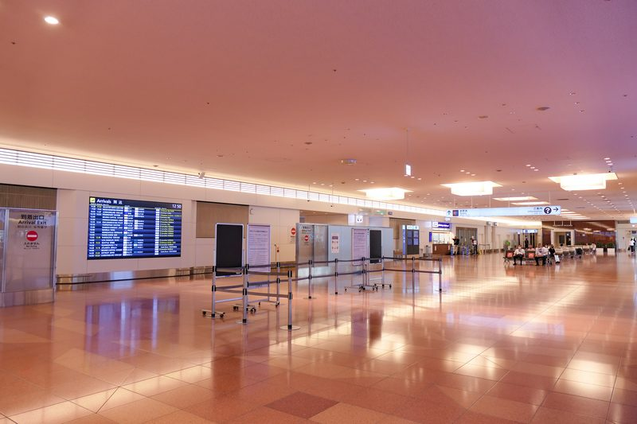
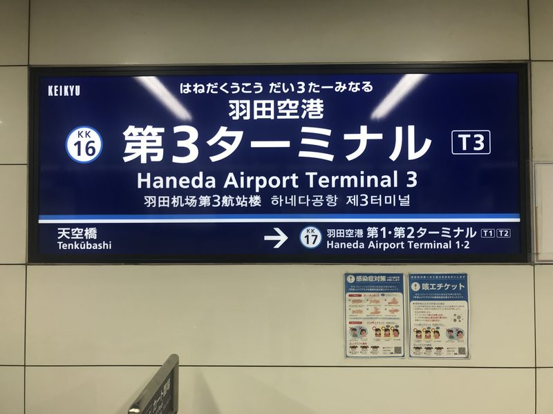
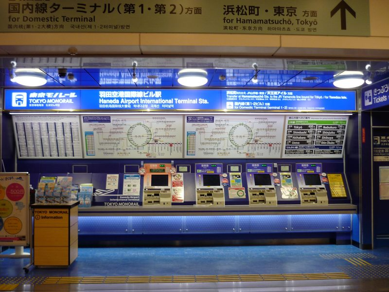
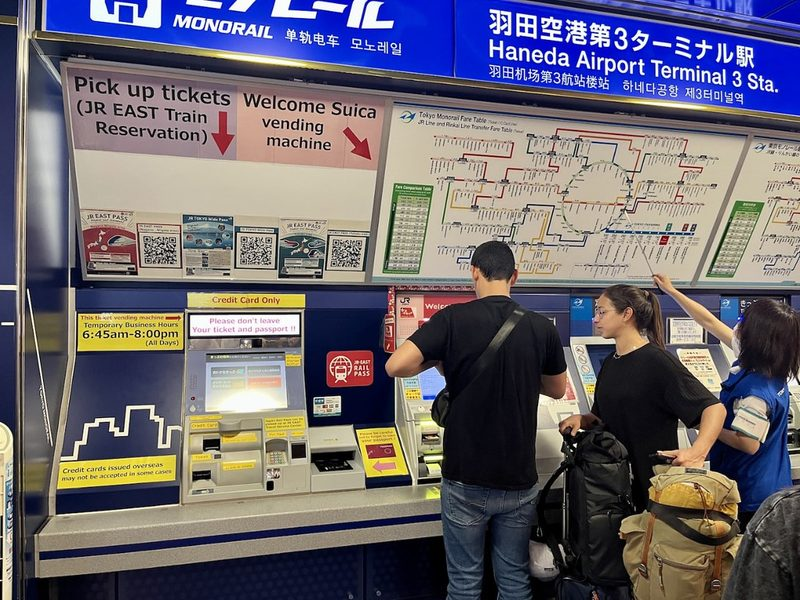
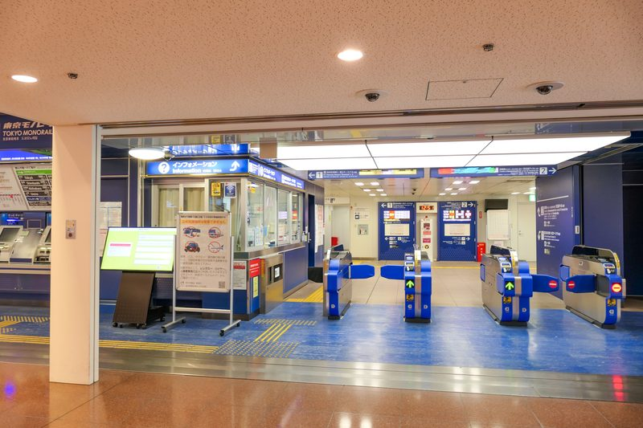
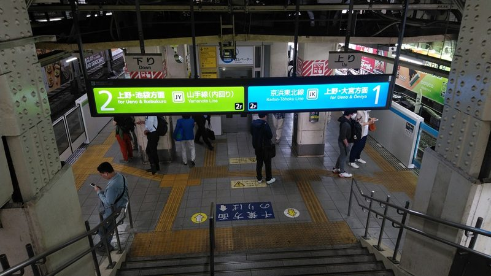
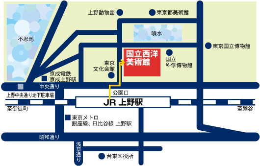
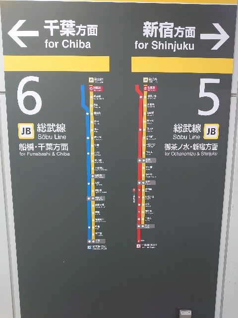
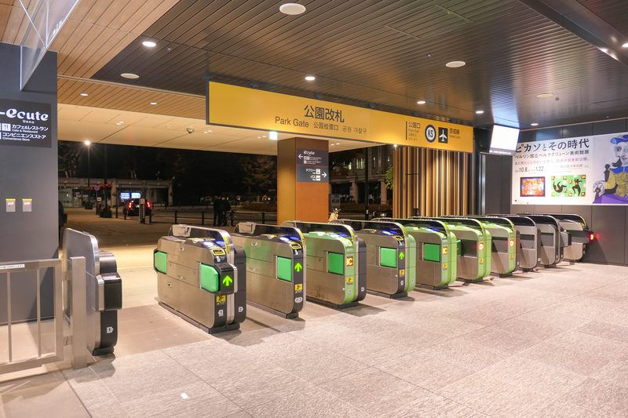

行前必讀：航班住宿 × 搭車提醒 × 全程總覽
✈️ 航班與機場接送資訊
- 去程航班：CI220 松山(TSA) → 羽田(HND) 09:00－13:10
- 回程航班：CI221 羽田(HND) → 松山(TSA) 14:30－16:55
- 🚗 專車機場接送：
- 去程送機：Day 1（8/20）05:30 專車司機至住家接送前往台北松山機場 (TSA)。
- 回程接機：Day 6（8/25）班機抵達松山機場（預計 16:55 降落通關），專車接機送回住家。
🏨 住宿資訊
海茵娜酒店东京浅草桥 (変なホテル東京 浅草橋) 🔗 (住宿 5 晚)
地址：1-10-5 Asakusabashi, Taito-ku, Tokyo 111-0053, JAPAN
💡 新手交通與搭車重要提醒
📄 行前必讀介紹文（第一次搭日本電車必看）：東京電車地鐵新手搭車完整攻略文章（2026） 🔗｜東京地鐵新手一定要知道的十件事介紹文 🔗
🎫 西瓜卡過閘門，其實只有三個動作：
1. 進站：把卡平貼在閘門上方的感應區（有 IC 標誌的那一塊），聽到「嗶」一聲、閘門沒關起來就是過了。系統會自動記錄你從哪一站進站。
2. 搭車：中途換車、換線大多不用再刷（同一公司站內轉乘）；只有跨不同公司（如 JR ↔ 東京 Metro／都營）才需要出閘門再進閘門。
3. 出站：再感應一次，車資自動從卡片餘額扣掉，螢幕會顯示扣了多少、還剩多少。全程不需要事先算錢、不需要買票。
- 💡 卡片放在票夾或皮夾裡也能感應，不必特地拿出來；但一次只能貼一張 IC 卡，兩張疊在一起會讀取失敗。
- 💡 要「貼平、停半秒」，不是快速掃過。閘門的燈號與音效會告訴你成功與否。
- 👨👩👧👦 五個人請一個一個過，同一張卡不能連續給兩個人進站。
⚠️ 閘門刷不過怎麼辦？別緊張，這很常見：Suica 進出站錯誤常見狀況與處理方式介紹文 🔗
- 最常見的原因是餘額不足。閘門會關起來並亮紅燈——此時不要硬擠、也不要往回走，直接到旁邊的 精算機（のりこし精算機） 或售票機加值，再重新感應出站即可。
- 若加值後仍過不去（例如忘了刷進站、卡片沒讀到），走到閘門旁有站務員的那一格窗口，把卡遞過去說「すみません、これ、通れません」（不好意思，這張過不去），站務員會查明原因、補收差額後放行。不會被罰款，也不需要會日文。
- 🔗 官方說明（JR 東日本官網，非中文）：通過檢票口的方法 🔗｜Suica 可用設備一覽 🔗
- 認顏色與月台比認日文快： 東京的 JR 線路都有專屬代表色。在車站搭車時，請認明「月台編號」與「車輛顏色」（例如：中央・總武線 = 黃色列車、山手線 = 綠色列車）。這比辨識複雜的日文漢字更直覺，最不容易坐錯方向。
- 🛗 大行李垂直動線規範（重要）： Day 1（抵達）與 Day 6（返程）進出淺草橋站務必走「A1 出口無障礙電梯」。其餘出口（A2/A3/A4）皆為純樓梯，切勿扛大行李走純階梯。
- ⚠️ 純樓梯警示原則： 平日遊玩出入站以手扶梯為主；若規劃出口為純樓梯，行程中均已加註「純樓梯階數警示」與「手扶梯/電梯替代出口」。
- 下載 App 協同輔助： 手機請先下載「乘車案內」App，或在進站時搭配「Google Maps」確認即時的月台與發車時間。
- 注意閘門內外（Day 3 關鍵）： 在 Day 3 東京車站跨越東西側時，必須走閘門外的「自由通路」（如北地下自由通路），切勿誤刷 Suica 進站。
- 善用飯店地利之便： 淺草橋站同時擁有 JR 中央・總武線與都營淺草線，前往淺草、晴空塔 🔗、羽田機場皆可直達。
🚃 車廂禮儀與優先席、大行李搭車須知（點擊展開）
📄 參考介紹文：在日本搭電車必須注意的 12 件事介紹文 🔗｜優先席怎麼坐、要不要讓座的辨識與開口指南文章 🔗
- 🪑 優先席：車廂兩端、座椅顏色與其他座位不同的區塊。離峰空車時一般人可以坐，但只要有長者、孕婦、行動不便者上車就要讓位。我們家長輩本身就是優先席的對象，可以安心坐。
- 🤫 車內不講電話、手機轉靜音；小孩講話音量請壓低，這是日本電車最被在意的一點。
- 🎒 後背包請抱在胸前或放腳邊，不要背在背後撞到別人。
- 🧳 大行李避開通勤尖峰 07:30－09:00：Day 1 抵達（下午）與 Day 6 出發（上午 09:00 後）都已避開，但若臨時提早移動請留意。行李請靠車廂角落或車門旁，不要擋走道。
- 🚪 先下後上：車門開啟時站兩側等候，讓車上乘客先下車；上車後往車廂內側移動，不要卡在門口。
- 🍱 通勤電車上不吃東西（新幹線、特急則可以）。
🧳 行前實用常識與緊急應變
🏥 生病、受傷、想買藥怎麼辦（帶長輩小孩必看，點擊展開）
📄 參考介紹文：日本旅遊就醫注意事項、找醫院與保險理賠攻略文章 🔗｜緊急看病求診日語教學文章 🔗
🔗 官方查詢：日本政府觀光局：身體不適時的應急指南與醫療機構搜尋（繁體中文） 🔗 —— 可依所在地區、對應語言、就診科別、能否刷卡篩選醫院。
- ☎️ 緊急電話：救護車與消防 119、警察 110（免費、24 小時）。日本政府觀光局的 訪日旅客熱線 050-3816-2787 也是 24 小時全年無休，提供中文，遇狀況不知道找誰時打這支。
- 💊 小症狀先去藥妝店：頭痛、腹瀉、感冒、蚊蟲叮咬、貼布，藥妝店的市售藥就能解決，日本店員多半聽得懂簡單英文或看得懂漢字。
- 👦 但小孩發燒／持續嘔吐不要自行買成藥：日本市售藥的年齡與劑量標示與台灣不同，帶小孩直接找小兒科（小児科）就醫最保險。
- 💴 外國人就醫全額自費，一次門診常見落在 ¥5,000～¥15,000。務必索取正式收據（領収書）與診斷證明，回台灣才能申請旅平險或健保核退。
- 🧾 出發前確認旅平險有含海外醫療，並把保單號碼與 24 小時客服電話存在手機裡。
- 🩹 隨身小藥包建議：常用退燒／止痛藥、腸胃藥、暈車藥、OK 繃、長輩的慢性病處方藥（請帶原包裝與處方箋副本）。
💴 日幣現金、刷卡與 ATM 提款（點擊展開）
📄 參考介紹文：日幣現金不夠時的自救方法介紹文 🔗｜日本旅遊信用卡與電子支付使用心得文章 🔗
- 💵 本行程有不少地方只收現金：Day 4 的炸牛肉丸名店、阿美橫丁的街邊小吃、部分神社寺廟、舊式投幣置物櫃、公車與扭蛋機。每人身上請至少留一些千圓鈔與百圓硬幣。
- 🏧 現金不夠時去便利商店 ATM：24 小時營業的便利商店 ATM 多數支援海外金融卡（機台會貼 PLUS／Cirrus／銀聯標誌），螢幕可切換中文，選「引き出し（提款）」即可。
- ⚠️ 出國前務必先向發卡銀行開通「海外提款」功能，並確認四位數的國際提款密碼（與台灣一般的密碼可能不同）以及每日提領上限。臨櫃或網銀都能辦，但到了日本才發現沒開通就來不及了。
- 💳 刷卡普及但別全押：百貨、連鎖餐廳、藥妝店幾乎都能刷；個人小店、屋台、老舖仍以現金為主。
- 🪙 硬幣會越積越多：日本 ¥500／¥100 硬幣面額大，找零很快堆滿。投幣置物櫃、扭蛋、自動販賣機正好拿來消化硬幣。
🔌 電壓插座、廁所、垃圾、小費等生活常識（點擊展開）
📄 參考介紹文：日本旅遊必知注意事項懶人包文章（2026） 🔗｜日本插頭與插座規格完整說明文章 🔗
- 🔌 電壓 100V、兩孔扁平插座，與台灣（110V）幾乎相容，手機、相機、筆電、行動電源直接插就好，不需要變壓器或轉接頭。唯一要注意的是台灣的三孔插頭需要「三轉二」轉接頭，以及吹風機、電棒等高功率電器會變弱。
- 🔋 行動電源與鋰電池只能隨身攜帶，嚴禁託運；且依規定需能看到容量標示。
- 🚻 廁所衛生紙可以直接沖進馬桶（是可溶紙），旁邊的垃圾桶是給衛生用品的。公共廁所大多免費且乾淨，車站、百貨、便利商店都有。
- 🗑️ 路上幾乎沒有垃圾桶：請隨身帶一個小塑膠袋裝垃圾，帶回飯店或到便利商店門口分類丟。
- 💰 日本沒有小費文化，餐廳、計程車、飯店都不用給，硬給反而造成困擾。
- 🚬 路上禁菸，抽菸請找標示「喫煙所」的區域。
- 🥩 肉類製品（含肉乾、香腸）與新鮮蔬果禁止帶入日本，回程也禁止把日本的肉製品帶回台灣。
📋 行程總覽與檢視 (Review)
1. 全程景點概覽
| 天數 | 主行程景點 | 選項 / 備案 |
|---|---|---|
| Day 1 方案 A | 秋葉原漫遊、GiGO 夾娃娃機、日系拍貼機、萬代扭蛋百貨店 | 友都八喜 6F 玩具模型展區 |
| Day 1 方案 B | 新宿東口、3D 巨貓 | — |
| Day 2 長輩組・晴天 | 不忍池、清水觀音堂、客美多咖啡（基地營）、國立西洋美術館、上野公園大噴水廣場、松坂屋 | 聖瑪克咖啡、松坂屋 8F 與頂樓休憩所 |
| Day 2 長輩組・雨天 | 東京國立博物館、國立西洋美術館、客美多咖啡（基地營）、松坂屋、PARCO_ya | 聖瑪克咖啡、松坂屋 8F 與頂樓休憩所 |
| Day 2 親子組 | 東京迪士尼樂園、夢之光電子大遊行、城堡高空投影秀 | 米奇魔法音樂世界、日間遊行、跳跳熱舞 |
| Day 3 | 東京菓子樂園、GRANSTA、KITTE 花園、國立科學博物館、阿美橫丁 | Intermediatheque 博物館（雨天）、多慶屋 |
| Day 4 | 三鷹之森吉卜力美術館、哈莫尼卡橫丁、天音鯛魚燒、小笹和菓子、THANK YOU MART、SATOU 炸牛肉丸、大創、Loft、無印良品 | Dream Market、gashacoco 扭蛋專門店、Linde 德國麵包 |
| Day 5 晴天 | 淺草寺、晴空塔、墨田水族館、東京都廳夜景（方案 A）、晴空街道（方案 B） | — |
| Day 5 雨天 | 日本科學未來館、DiverCity、SMALL WORLDS 迷你世界 | — |
| Day 6 | 築地場外市場、羽田機場出境免稅店 | 羽田機場輕食與採買 |
2. 全程餐點概覽
| 天數 | 主要餐廳 (餐點類別) | 選項 / 備案餐廳 (餐點類別) |
|---|---|---|
| Day 1 方案 A | 早餐：松山機場便利商店（飯糰、三明治） 晚餐：壽司郎（迴轉壽司） | 早餐：管制區內 Wing café、好饗廚房 晚餐：丸龜製麵（烏龍麵）、CoCo 壹番屋（咖哩飯） |
| Day 1 方案 B | 晚餐：Gusto（日式平價家庭料理） | LUMINE EST 餐廳街 |
| Day 2 長輩組 | 早餐與基地營：客美多咖啡（朝食吐司、咖啡套餐） 午餐：吉野家（牛丼、烤魚定食） 晚餐：名代 宇奈鰻魚飯（炭烤鰻魚飯） | 基地營：聖瑪克咖啡（咖啡、巧克力可頌）、松坂屋 8F 休憩所 點心：兔屋（銅鑼燒） 午餐：吉豚屋（豬排、豚汁定食） 晚餐：松屋（牛丼、燒肉定食） |
| Day 2 親子組 | 午餐與晚餐：園內彈性用餐、不跨區（行動點餐首選、行動餐車簡餐） | 園區各主題餐廳（依官方 App 即時篩選）、特色爆米花與造型點心 |
| Day 3 | 午餐：天丼 Tenya（天丼、炸蝦蓋飯） 點心：鴨與蔥拉麵（選配） 晚餐：吉野家（牛丼） | 午餐：高湯茶泡飯 圓、燕子烤肉漢堡排 晚餐：松屋（牛丼）、名代 宇奈鰻魚飯（鰻魚飯） |
| Day 4 | 午餐：薩莉亞（義式輕食） 下午茶：天音（鯛魚燒） 晚餐：串家物語（炸串） | 午餐：大戶屋（定食）、一風堂（拉麵）、花丸烏龍麵（烏龍麵） 點心：SATOU（炸牛肉丸，選配）、小笹（最中） 晚餐：一風堂（拉麵）、花丸烏龍麵（烏龍麵） |
| Day 5 晴天 | 午餐：達摩文字燒 晚餐：麥當勞（方案 A）、宮武烏龍麵（方案 B） | 利久牛舌、摩斯漢堡、一風堂 |
| Day 5 雨天 | 午餐：祖師坊蕎麥麵 晚餐：庫屋文字燒 | 田中蕎麥麵、勝衛門炸豬排 |
| Day 6 | 早餐：築地山長（玉子燒、各式小吃） 午餐：羽田機場餐廳街（日式定食、烏龍麵） | 早餐：築地丸武（玉子燒）、便利商店輕食（飯糰、三明治） |
抵達東京 × 秋葉原慢遊
🎯 今日重點
05:30 專車接送出發：自住家出發前往松山機場。
- 05:30 專車接送出發：自住家出發前往松山機場。
- 於羽田機場完成 1 張成人實體 Suica 與 2 張兒童 Welcome Suica 辦理（另 2 位成人已自備 Suica 卡）。
- 首日攜帶大行李，淺草橋出站唯一走 A1 出口無障礙電梯。
- 隔天迪士尼，建議盡早回飯店休息。
🚗 專車送機：前往松山機場
05:30 預約專車準時至住家接送，全家上車出發前往台北松山機場 (TSA) 國際線航廈（車程約 70～80 分鐘）。
💡 出門確認清單：護照（5人份且有效期限半年以上）、日幣現金、海外信用卡、日本上網網卡/eSIM。
- 05:30 預約專車準時至住家接送，全家上車出發前往台北松山機場 (TSA) 國際線航廈（車程約 70～80 分鐘）。
- 💡 出門確認清單：護照（5人份且有效期限半年以上）、日幣現金、海外信用卡、日本上網網卡/eSIM。
松山機場報到與行李託運
抵達台北松山機場 1F 國際線大廳，至中華航空櫃台辦理行李託運與劃位領取登機證。
- 抵達台北松山機場 1F 國際線大廳，至中華航空櫃台辦理行李託運與劃位領取登機證。
- 🧳 先託運再吃早餐：託運完手上只剩隨身行李，買東西、過安檢都輕鬆。
🍙 早餐：機場便利商店
🏪 便利商店位置（松山機場官網查證）
💡 五人份一次買齊；小孩早起沒胃口也先買著，登機前或上飛機再吃。
🏪 便利商店位置（松山機場官網查證）
| 店家 | 位置 | 管制區 | 營業時間 |
|---|---|---|---|
| 統一超商複合式概念店（國際航廈） | 第一航廈 國際線報到大廳北側 | ❌ 管制區外 | 05:30－22:00 |
| 7-Eleven（國內航廈） | 第二航廈 國內線到站大廳 | ❌ 管制區外 | 05:30－22:00 |
- ✅ 本行程要去的是第一航廈報到大廳北側那家：與中華航空櫃台同一層，託運完走過去即到，不必跑到第二航廈。
- 🍙 買了帶進管制區吃：飯糰、三明治、麵包、茶葉蛋等固體食物都可以通過安檢，08:00 準時往安檢移動，在候機室吃。
- 🚨 飲料不能過安檢：隨身行李液體限制每個容器 100 毫升。買的飲料請在過安檢前喝完，或直接在管制區內買。
- 💡 五人份一次買齊；小孩早起沒胃口也先買著，登機前或上飛機再吃。
通關安檢與登機
通過安檢與證照查驗，前往登機門，於候機室享用早餐，搭乘 CI220（09:00 起飛） 直飛東京羽田機場。
- 通過安檢與證照查驗，前往登機門，於候機室享用早餐，搭乘 CI220（09:00 起飛） 直飛東京羽田機場。
- ☕ 管制區內要補飲料或熱食（松山機場官網查證）：
| 店家 | 位置 | 營業時間 |
|---|---|---|
| Wing café | 第一航廈出境樓層 5 號登機門旁 | 05:30－18:00 |
| homee KITCHEN 好饗廚房 | 第一航廈出境樓層 8 號登機門旁 | 05:30－20:00 |
抵達羽田機場第 3 航廈
📄 行前必讀介紹文：Visit Japan Web 申請與快速通關教學文章｜手把手圖解填寫教學文章
💡 羽田第 3 航廈已導入「共同自助通關機（共同キオスク）」，憑 QR Code 自助完成入境審查與海關手續，平均可縮短 15～30 分鐘。
📄 行前必讀介紹文：Visit Japan Web 申請與快速通關教學文章 🔗｜手把手圖解填寫教學文章 🔗
- ⚠️ 出發前務必在台灣完成 Visit Japan Web：它整合「入境審查」與「海關申報」，完成後會產生 QR Code。
- 💡 羽田第 3 航廈已導入「共同自助通關機（共同キオスク）」，憑 QR Code 自助完成入境審查與海關手續，平均可縮短 15～30 分鐘。
- 👨👩👧👦 五人份都要各自申請（每人一組 QR Code，小孩也要），建議行前一次做完並截圖存手機相簿，避免現場沒網路。
入境、提領行李、海關（預計 50～60 分鐘）。
- 🛬 下飛機後動線：跟著頭頂指標 「Arrivals / 到着」、「Immigration / 入国審査」 前進即可，先完成入境手續，不需特別找電車方向。
- 🛂 入境審查：準備全家 5 人護照及 Visit Japan Web QR Code（若已完成），依工作人員指示排隊通關。
- 🧳 領取行李：依電子看板尋找航班 CI220 對應之 「Baggage Claim / 手荷物受取」 行李轉盤提領行李。
📸 【辨識：T3 到達大廳】

羽田機場 T3 到達大廳實景
- 🛃 海關檢查：領完行李後依指標往 「Customs / 税関」 完成海關檢查與申報，出閘門正式進入 T3 2F 到達大廳（Arrival Lobby）。
⚠️ 出關後第一個容易走錯的地方：
- 出關後先不要停留逛商店，留在 2F（不用先搭電梯上樓）。
- 先找頭頂大型指標「Railways（鉄道）」 ➔ 再依照 「Keikyu Line（京急線 - KK16）」 方向前進。
- ❌ 請勿走「Tokyo Monorail（東京モノレール）」（單軌電車只到浜松町，去淺草橋飯店必須轉車 2 次提大行李；京急線才能一車直達淺草橋）。
📸 【辨識：鐵路交通方向指標】

羽田 T3 鐵路交通方向與車站區域
機場整備與 Suica 交通卡辦理
📄 行前必讀介紹文：Welcome Suica 購買／增值／使用完整教學文章（含兒童卡）｜另一篇購買方式教學文章
💡 無記名綠色 Suica 已於 2025/3/1 恢復發售（先前因晶片短缺停售）：售價 ¥2,000，其中 ¥1,500 為可用餘額、¥500 為押金，不用時可退卡取回押金。
📄 行前必讀介紹文：Welcome Suica 購買／增值／使用完整教學文章（含兒童卡） 🔗｜另一篇購買方式教學文章 🔗
📄 成人綠色 Suica 介紹文：Suica 購買儲值與手機綁定完整教學文章 🔗｜2026 各類 IC 卡比較與購買攻略文章 🔗
- 💡 無記名綠色 Suica 已於 2025/3/1 恢復發售（先前因晶片短缺停售）：售價 ¥2,000，其中 ¥1,500 為可用餘額、¥500 為押金，不用時可退卡取回押金。
- ⚠️ 購買免登記個人資料，但遺失無法補發；若擔心遺失，可改用手機版 Suica（加入 Apple 錢包／Google 錢包）。
- 💡 兒童卡重點：可購買 6～11 歲兒童版，購買時需出示兒童本人護照；滿 12 歲後至該年 3 月 31 日止仍可使用。Welcome Suica 免押金、不需退卡，儲值上限 ¥20,000，有效期自首次使用起 28 天。
📍 位置說明：目前位於 T3 2F 到達大廳。京急入口、售票機及服務中心皆位於 2F，不用先搭電梯上樓。
🟢 Step 1：成人交通卡（1 人購買實體 Suica + 2 人已自備）
- 已有 2 張成人 Suica：2 位成人已自備 Suica 卡，可直接於 2F 售票機或便利商店儲值（建議餘額保持 ¥2,000～¥3,000）。
- 購買 1 張成人實體 Suica：於 2F 售票機區尋找帶有 「Suica / きっぷ / Tickets / 自動券売機」 之機台購買 1 張成人實體 Suica，先儲值 ¥2,000～¥3,000。
📸 【辨識：2F 售票機區】

羽田機場第3航廈站售票機實景
🔴 Step 2：小孩（2 人）辦理「兒童 Welcome Suica」
- 請至 2F 的 Welcome Suica 專用販售機 或改札旁的 JR EAST Travel Service Center (JR東日本旅行服務中心) 🔗 辦理：
- 👦👧 辦卡要點：
1. 需出示兒童本人護照（出關後護照先不要收進行李箱）。
2. 每張建議先儲值 ¥2,000～¥3,000（搭乘電車地鐵自動扣半價兒童票）。
3. 免 ¥500 押金，有效期限為 28 天（本次 6 天行程完全足夠）。
📸 【辨識：Welcome Suica 專用機】

羽田機場 T3 Welcome Suica 專用販售機實景
🆘 Step 3：迷路與求助對策 SOP
- 📍 服務中心：若現場找不到機台，直接前往 2F 改札旁的 「JR EAST Travel Service Center」（營業時間 06:45～20:00）。
- 📱 溝通小卡（出示手機畫面即可）：
- 找京急線：`Where is the Keikyu Line? / 京急線はどこですか？`
- 購買兒童卡：`I'd like to buy two child Welcome Suica cards. / 子供用のWelcome Suicaを買いたいです。`
🚻 Step 4：辦卡完成後整備
- 5 張交通卡準備妥當後，於 2F 處理：洗手間、ATM 提款、購買飲料、整理隨身裝備。
前往飯店
搭乘首選（直達）：從 羽田機場第3航廈站 🔗 搭乘「京急機場線 (直通都營淺草線)」直達 淺草橋站（A1 電梯出口）。車程約 40-45 分鐘，免提行李換車。
🚶 Step 1：前往京急月台
- 辦好交通卡後，依照現場 「Keikyu Line（京急線 - KK16）」 指標前往剪票口：
- 於 京急 羽田機場第3航廈站 (羽田空港第3ターミナル駅) 🔗（KK16） 地下 2 樓改札口感應刷卡進站。
- 成人：3 位持成人實體 Suica 直接感應刷卡進站。
- 小孩：2 位持兒童 Welcome Suica 直接感應刷卡進站。
- 不用另外購買單程車票。
- ⚠️ 通過剪票口後，搭乘電梯或電扶梯下至地下月台。
📸 【辨識：京急線改札口實景】

羽田機場第3航廈站京急線改札口實景
🚆 Step 2：搭乘京急直通都營淺草線（一車直達淺草橋）
- 於 京急 羽田機場第3航廈站 (羽田空港第3ターミナル駅) 🔗（KK16） 搭乘 🔴 京急機場線直通 🌹 都營淺草線（A） 列車（紅色/玫瑰紅色列車，往 成田空港／青砥／押上 方向），一車直達 淺草橋站 (浅草橋駅) 🔗（A16）（車程約 40-45 分鐘，免提大行李轉乘）。
- 💡 最簡單判斷法（上車防搭錯）：
- ✅ 月台電子看板有「浅草橋（Asakusabashi）」停靠站即可上車！不需要刻意分辨普通、急行、特急或快特，只要顯示停靠「浅草橋」即為直達車。
- 若不確定可詢問月台站務人員：`Does this train stop at Asakusabashi? / この電車は浅草橋に停まりますか？`
🛗 Step 3：淺草橋出站動線（大行李必看）
- 抵達淺草橋站後，請跟隨無障礙標誌搭電梯至剪票口，並走「A1 出口（設有直達地面電梯）」出站。出站後過馬路直行約 95 公尺（約 2 分鐘）即達飯店大門。
- ⚠️ 警告：A2 出口距離雖近但為「純長樓梯（約 35 階，無手扶梯與電梯）」，攜帶大行李切勿走 A2。
飯店 Check-in 與休息
步行抵達 海茵娜酒店 🔗 辦理 Check-in、置放行李、稍作休息，更換舒適鞋衣。
- 辦理 Check-in、置放行李、吹冷氣稍作休息、更換輕便服裝。
## ⭐ Day 1 Check-in 後動態決策
前往秋葉原
慢步 2 分鐘至 JR 淺草橋站，搭乘 JR 中央・總武線 (黃色列車) 1 站直達 秋葉原站 🔗 (車程僅 2 分鐘)。
- 16:15 離開飯店 ➔ 慢步 2 分鐘至 JR 淺草橋站 (浅草橋駅) 🔗（JB20）（西口進站有電梯）。
- 於 JR 淺草橋站 (浅草橋駅) 🔗（JB20） 1 號月台搭乘 🟡 JR 中央・總武線（JB） 往 秋葉原（Akihabara／JB19）／新宿 方向，搭乘 1 站 至 秋葉原站 (秋葉原駅) 🔗（JB19）（車程約 2 分鐘，下一站即為秋葉原，由電氣街口出站即達）。
🕹️ 日式夾娃娃機體驗
目標地點：GiGO 秋葉原3號館 (GiGO 秋葉原3号館) (1F/2F 夾娃娃機專區)
💡 消費預估：夾娃娃機體驗約 ¥500～¥1,000 / 全家，小試身手體驗日式機台手感即可。
- 目標地點：GiGO 秋葉原3號館 (GiGO 秋葉原3号館) 🔗 (1F/2F 夾娃娃機專區)
- 核心體驗（1F/2F）：體驗日式夾娃娃機（UFO Catcher），有動漫周邊、人氣公仔與玩偶。
- 💡 消費預估：夾娃娃機體驗約 ¥500～¥1,000 / 全家，小試身手體驗日式機台手感即可。
- （Option：若想參觀其他樓層大型電玩，3F 為音樂節奏遊戲、7F 為懷舊復古遊戲專區 RETRO:G，可視時間與興趣順路搭手扶梯快閃參觀）。
日系拍貼機全家合影體驗
目標地點：日系拍貼機體驗 (Purikura / GiGO 拍貼機專區) (GiGO 秋葉原3號館 2F 拍貼機專區 / 或下一站 namco 3F)
💡 消費預估：每次固定為 ¥500（約台幣 105 元，極具紀念價值）。
- 目標地點：日系拍貼機體驗 (Purikura / GiGO 拍貼機專區) 🔗 (GiGO 秋葉原3號館 2F 拍貼機專區 / 或下一站 namco 3F)
- 全家合影紀念：全家 5 人拍一張大眼美肌拍貼（プリクラ）。
- 趣味塗鴉：拍完可在觸控螢幕塗鴉、加貼圖。
- 現場取件：當場印出貼紙，每人一張；也可掃碼下載電子檔。
- 💡 消費預估：每次固定為 ¥500（約台幣 105 元，極具紀念價值）。
萬代官方扭蛋體驗｜OPTION
🟡 本段為選配，預設不排時間：抵達秋葉原後只剩約 55 分鐘，而壽司郎 17:30 已訂位、遲到會被壓縮用餐時間。時間夠、小孩還有體力才去，否則直接去吃晚餐。
💡 消費預估：每顆約 ¥300～¥500，預算約 ¥600～¥1,000 / 2 位小孩。
🟡 本段為選配，預設不排時間：抵達秋葉原後只剩約 55 分鐘，而壽司郎 17:30 已訂位、遲到會被壓縮用餐時間。時間夠、小孩還有體力才去，否則直接去吃晚餐。
🎰 Day 4 也有扭蛋，不去不可惜：吉祥寺的 gashacoco (gashacoco 吉祥寺元町通り) 🔗（吉祥寺パレスビル 1F）機台約 650 台以上，Day 4 下午 15:00－15:35 那段就在旁邊，可以留到那時再扭。
- 目標地點：萬代扭蛋百貨店 秋葉原店 (ガシャポンバンダイオフィシャルショップ秋葉原店) 🔗 (いちご秋葉原駅前ビル 4F / namco 4F)
- 全秋葉原規模最大之一的官方扭蛋專門店，近千台動漫、寶可夢、迪士尼與微縮模型扭蛋機，館內冷氣充足。
- 💡 消費預估：每顆約 ¥300～¥500，預算約 ¥600～¥1,000 / 2 位小孩。
- ⏱️ 若要去就抓 17:15－17:30，15 分鐘只夠各扭 1～2 顆，扭完直接下樓走去壽司郎。
- （Option：若想參觀大型玩具模型展區，可順路快閃 友都八喜 (ヨドバシカメラ マルチメディアAkiba) 🔗 (6F 玩具模型展區) 欣賞展示模型）。
晚餐：壽司郎
首選餐廳：🍣 壽司郎 秋葉原駅前店 (BiTO AKIBA B1F) 🔗 享用平價迴轉壽司（人均 ¥1,000～¥1,800）。已訂位。全中文觸控平板、現點現做軌道直送，90 分鐘寬裕用餐！
備案 1：丸龜製麵 秋葉原店 🔗 (烏龍麵，¥500-900)
備案 2：CoCo壹番屋 秋葉原站前店 🔗 (咖哩飯，¥800-1,200)
🎫 票務狀態：已訂位
- 首選餐廳：壽司郎 (スシロー 秋葉原駅前店) 🔗 (BiTO AKIBA B1F) 享用平價迴轉壽司（推薦：鮭魚三貫、鮪魚泥海苔包、炸蝦天婦羅壽司、茶碗蒸、酥脆薯條、甜點百匯），人均約 ¥1,000～¥1,800。
- 💡 點餐與用餐祕訣（全繁體中文平板）：
1. 免排隊時段：17:30 入座剛好避開晚間 18:30 後的下班人潮，迅速入座免久候。
2. 零語言壓力：桌上設有繁體中文觸控平板，小孩可自己點選喜歡的壽司、熟食與甜點，現點現做由軌道極速直送。
3. 用餐時間 90 分鐘，不趕。
- 備案餐廳 1：丸龜製麵 (丸亀製麺 秋葉原店) 🔗 (アトレ秋葉原1 1F) 享用讚岐烏龍麵（推薦：豚骨烏龍麵、炸天婦羅），人均約 ¥500～¥900。
- 💡 點餐祕訣：拿托盤 ➔ 向廚師手指照片點麵（說 "Hot/Cold"、"Regular"）➔ 自己夾炸物 ➔ 結帳 ➔ 免費自助加蔥花與天婦羅酥。
- 備案餐廳 2：CoCo壹番屋 (CoCo壱番屋 JR秋葉原駅昭和通り口店) 🔗 (渡辺ビル 1F) 享用日式咖哩（推薦：炸豬排咖哩、兒童咖哩套餐），人均約 ¥800～¥1,200。
- 💡 點餐與付款祕訣（依店舖採不同方式，現場為準）：
1. 官方確認共三種點餐方式：入座後叫店員點餐（餐後至收銀櫃台結帳）、桌上平板點餐、手機行動點餐；⚠️ 本分店採哪一種未經官方確認。
2. ⚠️ 外語菜單有無查無官方資料；咖哩需選擇「飯量」與「辣度」，若為口頭點餐建議直接指認菜單照片並比出數字。
🚆 返回淺草橋
步行至 JR 秋葉原站 🔗，搭乘 JR 中央・總武線 1 站直達 淺草橋站 (車程 2 分鐘)。
- 從秋葉原商圈步行至 JR 秋葉原站 (秋葉原駅) 🔗（JB19） 電氣街口或中央口進站。
- 於 JR 秋葉原站 (秋葉原駅) 🔗（JB19） 6 號月台搭乘 🟡 JR 中央・總武線（JB） 往 千葉（Chiba／JB39） 方向，搭乘 1 站 直達 淺草橋站 (浅草橋駅) 🔗（JB20）（車程約 2 分鐘，下一站即為淺草橋）。
- 由 「東口（East Exit）」 出站，步行約 2 分鐘前往超市採買。
前往新宿東口
16:30 離開飯店 ➔ 慢步約 2 分鐘至 JR 淺草橋站 (浅草橋駅)（JB20） 1 號月台進站。
- 16:30 離開飯店 ➔ 慢步約 2 分鐘至 JR 淺草橋站 (浅草橋駅) 🔗（JB20） 1 號月台進站。
- 於 JR 淺草橋站 (浅草橋駅) 🔗（JB20） 搭乘 🟡 JR 中央・總武線（JB） 往 新宿（JB10）／三鷹 方向，搭乘 2 站 至 御茶之水站（JB18）（車程約 4 分鐘）。
- 於 御茶之水站（JC03） 不用出站，於同月台對面直接平行轉乘 🟠 JR 中央線快速（JC） 往 新宿（Shinjuku／JC05）／高尾 方向，搭乘 2 站直達 新宿站 (新宿駅) 🔗（JC05）（車程約 9 分鐘，總車程約 18 分鐘，在冷氣車廂內坐著休息補眠）。
- 抵達新宿站後不趕時間，跟隨 「東口（East Exit）」 黃色指標走地下通道出站（步行約 5-8 分鐘）。
🐈 欣賞新宿 3D 巨貓
目標地點：Cross Shinjuku 3D 巨貓 (クロス新宿ビジョン)
- 目標地點：Cross Shinjuku 3D 巨貓 (クロス新宿ビジョン) 🔗
- 亮點特色：新宿東口出站，站前廣場抬頭即可看見會叫的巨大 3D 三花貓。
- 安心觀賞：廣場開闊平坦，站著看即可；每隔數分鐘一段演出（打哈欠、伸懶腰、睡覺、跳出來打招呼）。
晚餐：Gusto 家庭餐廳
首選餐廳：Gusto (ガスト 新宿NOWAビル店) (新宿NOWAビル 7F) 享用平價日式家庭料理（推薦：起司流心漢堡排、炸豬排定食、兒童咖哩/鬆餅餐），人均約 ¥800～¥1,200。
- 首選餐廳：Gusto (ガスト 新宿NOWAビル店) 🔗 (新宿NOWAビル 7F) 享用平價日式家庭料理（推薦：起司流心漢堡排、炸豬排定食、兒童咖哩/鬆餅餐），人均約 ¥800～¥1,200。
- 親子優勢：座位寬敞、全中文平板點餐、出餐快，有貓咪送餐機器人。
- 備案餐廳：LUMINE EST 餐廳街 (ルミネエスト新宿 7&8 DINER) 🔗 (東口車站直結 7F/8F) 享用日式洋食/定食/蛋包飯（推薦：オムライス 卵と私、洋食亭ブラームス），人均約 ¥1,300～¥2,000。
- 動線優勢：就在東口車站正上方，搭電梯上樓用餐，吃完下樓即進站。
🚆 返回淺草橋
步行至 JR 秋葉原站 🔗，搭乘 JR 中央・總武線 1 站直達 淺草橋站 (車程 2 分鐘)。
- 於 JR 新宿站 (新宿駅) 🔗（JC05） 7/8 號月台搭乘 🟠 JR 中央線快速（JC） 往 東京（Tokyo／JC01） 方向，搭乘 2 站至 御茶之水站（JC03）（車程約 9 分鐘）。
- 於 御茶之水站（JB18） 不用出站，於同月台對面直接平行轉乘 🟡 JR 中央・總武線（JB） 往 千葉（Chiba／JB39） 方向，搭乘 2 站 直達 淺草橋站 (浅草橋駅) 🔗（JB20）（車程約 4 分鐘）。由 東口 出站步行前往超市採買。
- 💡 此時段剛好稍微避開晚間下班尖峰，電車平穩舒適。
生鮮超市採買
前往飯店旁 肉之Hanamasa超市 (肉のハナマサ 浅草橋店) 🔗 採買：翌日早餐鮮乳、麵包、優格、礦泉水與當季水果。
- 返回淺草橋站出站後，慢步 2 分鐘順路前往 肉之Hanamasa超市 (肉のハナマサ 浅草橋店) 🔗 採買：明日早餐鮮乳、麵包、優格、礦泉水與當季水果（比超商更經濟實惠）。
🛌 準時就寢
21:00－21:30 準時就寢，隔天 06:20 起床睡滿 9 小時，充足體力迎戰東京迪士尼！
- 21:30 前入睡，隔天 06:20 起床，睡滿 9 小時。
雙線交織：上野漫遊 (長輩組) ＆ 迪士尼樂園 (親子組)
早餐
起床梳洗吃早餐，準備 09:00 出發。
起床梳洗吃早餐，準備 09:00 出發。
前往上野御徒町
從淺草橋搭 JR 總武線至秋葉原，轉山手線 1 站至 御徒町站 🔗 北口出站，過馬路直達松坂屋與 PARCO_ya。
- 從飯店步行約 2 分鐘至 JR 淺草橋站 (浅草橋駅) 🔗（JB20） 東口進站。
- 第一段（淺草橋 ➔ 秋葉原）：於 JR 淺草橋站 (浅草橋駅) 🔗（JB20） 1 號月台 搭乘 🟡 JR 中央・總武線（JB） 往 秋葉原（Akihabara／JB19）／新宿（Shinjuku／JB10） 方向，搭乘 1 站 至 秋葉原站 (秋葉原駅) 🔗（JB19）（車程約 2 分鐘）。
- 💡 下一站防呆：搭車後下一站應為 秋葉原（Akihabara）；若顯示 兩國（Ryogoku） 表示搭錯方向，請立即下車改搭對面月台列車。
📸 【辨識：秋葉原站轉乘指標（最重要）】

秋葉原站 JR 山手線與京濱東北線往上野方向轉乘指標
- ✔ 請認準頭頂綠藍雙色指標：
- 🟢 山手線 (JY)
- 🔵 京濱東北線 (JK)
- 標註 「for Ueno & Omiya（往上野、大宮）」
- 看到此指標即可順著階梯/電扶梯往下走至月台，表示方向正確。
- 第二段（秋葉原 ➔ 御徒町，站內轉乘不出站）：於秋葉原站 不用出站，跟隨指標下樓至月台。
- 搭乘 🟢 JR 山手線（JY）（秋葉原 JY03）往 上野（Ueno／JY05）／池袋（Ikebukuro／JY13） 方向，或 🔵 JR 京濱東北線（JK）（秋葉原 JK28）往 上野（Ueno／JK30）／大宮（Omiya） 方向，搭乘 1 站 至 御徒町站 (御徒町駅) 🔗（JY04 / JK29）（車程約 2 分鐘）。
- ⚠️ 正反方向對照：請認明月台指標目的地方向為「上野 (Ueno) ／ 池袋 (Ikebukuro) ／ 大宮 (Omiya)」，看到這三個站名即代表方向正確；若看到「東京 (Tokyo) ／ 品川 (Shinagawa)」請切勿搭乘，那是反方向。
- 💡 下一站防呆：搭車後下一站即為 御徒町（Okachimachi）。
- 🚶♂️ 出站動線：於 「御徒町站北口（North Exit）」 出站，過馬路即直接抵達百貨公司 松坂屋 (松坂屋 上野店) 🔗 與 PARCO_ya (PARCO_ya 上野) 🔗。
晨間不忍池與清水觀音堂散步
趁著早晨陽光尚未炙熱，散步前往鄰近的不忍池 🔗與清水觀音堂 🔗：
- 趁著早晨陽光尚未炙熱，散步前往鄰近的不忍池 🔗與清水觀音堂 🔗：
- 不忍池 (不忍池 弁天堂) 🔗：夏日荷花與湖中弁天堂，步道平緩好走。
- 清水觀音堂 (清水観音堂) 🔗：仿京都清水寺的紅色舞台建築，於樹蔭高台俯瞰不忍池 🔗與著名的「月之松」。
- 🍪 順路名產：回程順道步行至 兔屋 (うさぎや) 🔗 買現做的百年銅鑼燒，帶到咖啡廳吃。
⏱️ 這段需要 90 分鐘：松坂屋 🔗 ➔ 不忍池 ➔ 清水觀音堂 🔗 ➔ 兔屋 🔗 ➔ 松坂屋 🔗全長約 2.2 公里，長輩步速純走路就要 41 分鐘，再加參拜、拍照與排隊買銅鑼燒。清水觀音堂位於高台需爬階梯，走不動可只到不忍池就折返。
🗺️ 上野公園區域位置圖（先看這張抓方位）

上野公園區域位置圖：不忍池、上野動物園、東京都美術館、大噴水、東京國立博物館、國立西洋美術館 🔗、國立科學博物館與 JR 上野站公園口的相對位置
- 左上角是 不忍池，本段散步就在這一帶；清水觀音堂 在不忍池與大噴水之間的樹蔭高台上，地圖上未單獨標示。
- 圖中央紅色方塊是 國立西洋美術館 🔗（下午的行程），右邊緊鄰 國立科學博物館，最右邊是 東京國立博物館（雨天備案）。
- 下方 JR 上野駅 走 公園口（公園改札） 出站、過馬路即進公園，全程平坦。（地圖來源：台東區公所）
室內基地營避暑
🥇 首選：客美多咖啡 上野広小路店 🔗（沙發座/11:00前朝食，¥500-700）。
🥈 備案：聖瑪克咖啡 御徒町南口店 🔗（¥400-650）。
🥉 免費：松坂屋 8F/RF 休憩所 🔗（免費短暫歇腳）。
- 10:00 百貨營業，兩人先至基地營會合歇腳，吹冷氣避開逐漸升高的氣溫：
- 🥇 首選基地營：客美多咖啡 (コメダ珈琲店 上野広小路店) 🔗 (上野東洋大樓 2F，松坂屋 🔗斜對面，步行約 3～4 分鐘/約 240m；設有沙發型座位，咖啡廳型態適合坐下喝飲料休息，熱咖啡/紅茶約 ¥500～¥700）。（📄 點此看官網朝食菜單 🔗）
- 💡 點餐與付款祕訣（桌邊點餐・11:00前朝食服務・餐後櫃台結帳）：
1. 入座後由店員送上冰水與圖文菜單，手指照片點選熱咖啡（コメダブレンド）或熱紅茶。
2. 上午 11:00 前點任一飲品享「選べるモーニング」：可免費選配麵包（「山食パン」吐司 或「ローブパン」圓麵包）與配料（「定番ゆで玉子」水煮蛋、「手作りたまごペースト」蛋沙拉醬 或「コメダ特製おぐらあん」紅豆泥）。
3. 餐點由店員端送上桌並附帳單。
4. 用餐完畢後拿著帳單至門口收銀櫃台，以日幣現金、Suica 等交通系 IC 卡或信用卡結帳。
- 🥈 備案基地營：聖瑪克咖啡 (サンマルクカフェ 御徒町南口店) 🔗 (靠近 JR 御徒町站，從松坂屋 🔗/PARCO_ya 步行約 1～2 分鐘/約 70～130m；官方確認共 65 席，熱咖啡/紅茶約 ¥360～¥420 起，招牌點心「チョコクロ」巧克力可頌約 ¥220～¥240，人均約 ¥400～¥650）。
- 💡 點餐與付款祕訣（櫃台前付款・自行取餐）：
1. 進店後先至保溫點心櫃夾取「チョコクロ (巧克力可頌)」（或直接至櫃台）。
2. 於收銀櫃台手指圖文菜單點選飲品（如「ブレンドコーヒー Hot」、「紅茶 Hot」），告知杯型（S/M）。
3. 於櫃台直接以日幣現金、Suica 等交通系 IC 卡或信用卡付款。
4. 在取餐區領取托盤餐點後，自行入座享用。
- 🥉 館內免費休息點：松坂屋 (松坂屋 上野店) 🔗 8F／RF 休憩所 (松坂屋本館 8F/RF 設有免費休憩空間與座位，開放時間為 10:00～18:30，無低消零消費）。
- ⚠️ 使用注意事項：此處為百貨館內短暫休憩空間，適合逛累後坐下歇腳；官方未開放作為外帶便當或正餐之用餐場所，請遵守現場規範僅作短暫休息。
- 室內自由活動：可在咖啡廳悠閒品嚐咖啡，或逛松坂屋上野店 🔗地下美食街、書店與 PARCO_ya 🔗 精緻商場。
午餐：吉野家 / 吉豚屋
首選餐廳：吉野家 御徒町駅前店 🔗 (松坂屋斜對面) 享用熱騰騰日式定食與丼飯（人均 ¥600～¥1,000）。
備案：吉豚屋 御徒町南口店 🔗 現炸豬排定食與熱豚汁（人均 ¥700～¥1,100）。
- 於約定地點會合。
- 首選餐廳：吉野家 (吉野家 御徒町駅前店) 🔗 (松坂屋 🔗本館斜對面，步行僅 1 分鐘) 享用熱騰騰日式定食與丼飯（推薦：牛鮭定食［燒肉+煎鮭魚雙拼］、牛皿定食、豚生薑燒定食），人均約 ¥600～¥1,000。
- 💡 點餐與付款祕訣（Cooking & Comfort 新型門市・前結帳取鈴制）：
1. 門市採新型舒適風格，店內設有桌席。
2. 進店後先至點餐櫃台（或入口點餐機）看圖文菜單（手指照片點「牛鮭定食」或「牛丼套餐」），並於櫃台直接付款（支援 Suica、現金、信用卡）。
3. 付款後領取震動呼叫鈴（呼び出しベル）至座位就座；呼叫鈴震動響起時至取餐口領取餐點托盤，用餐完畢將餐盤放回返還口即可。
- 備案餐廳：吉豚屋 (かつや 御徒町南口店) 🔗 (PARCO_ya 🔗 旁/御徒町站南口，步行約 1.5 分鐘) 享用現炸日式豬排定食與熱豚汁（推薦：里肌豬排定食、滑蛋豬排蓋飯、豚汁豬肉蔬菜味噌湯），人均約 ¥700～¥1,100。
- 💡 點餐與付款祕訣（自動售票機・依店內動線出餐）：
1. 進店門口使用自動售票機，可切換語言或直接依照片觸控選餐。
2. 點選豬排定食或丼飯後，投入日幣紙鈔或感應 Suica 卡付款取餐券（定食類標準附熱豚汁）。
3. 入座將餐券交給店員，依序等候現炸餐點上桌，免日文溝通。
- 11:30 準時入座可免排隊。
參觀國立西洋美術館
室內避暑亮點：🏛️ 國立西洋美術館 🔗 欣賞羅丹雕塑與莫內睡蓮（滿 65 歲長輩出示護照常設展免費入場，冷氣極強！）。
🎫 票務狀態：免費入場（本時段僅長輩組前往，常設展符合免費資格，出示護照即可）
⏱️ 12:30 就要從餐廳出發：松坂屋 🔗／御徒町一帶到美術館約 1.1 公里，長輩步速需 20～25 分鐘（不是 5 分鐘），且走在正午最熱的時段，請預留 30 分鐘並中途在樹蔭下休息。體力不佳時可改搭 JR 山手線 1 站至上野站，走公園口出站（全程平坦）。
- ☀️ 正午避暑策略：13:00~15:30 是一天中最炎熱時段，由松坂屋 🔗穿越公園林蔭步行約 20～25 分鐘，進入世界文化遺產 國立西洋美術館 (国立西洋美術館) 🔗 參觀室內常設展。
- 💡 長輩專屬優惠與免費入場方式：
- 官方規定：滿 65 歲以上長者參觀常設展「完全免費」（一般成人票價 ¥500；特別展除外）。
- 入場方式：入館前至售票窗口（券売窓口）向工作人員出示護照（確認年齡滿 65 歲），即可直接領取「免費常設展入場券（無料観覧券）」，憑券驗票進場。
- 參觀亮點：冷氣充足、長椅多、動線平順；館藏莫內《睡蓮》真跡、雷諾瓦名畫與大師雕塑。
- （若室內悠閒組長輩不想看展，亦可繼續留於松坂屋/PARCO_ya 吹冷氣逛街休息）。
- ☀️ 15:30－16:00 不要急著出去：8 月下旬東京 15:30 仍有 32～34 度，看完展請在館內咖啡廳或大廳休息半小時，16:00 氣溫較緩和再出去散步。
🗺️ 上野公園區域位置圖（美術館在公園的哪個位置）
上野公園區域位置圖：國立西洋美術館 🔗位於 JR 上野站公園口正前方，右鄰國立科學博物館，再往右為東京國立博物館
- 圖中央的紅色方塊就是國立西洋美術館 🔗，從 JR 上野駅 公園口 出站後幾乎正對面，走路 2 分鐘、不用過大馬路。
- 它的右邊緊鄰國立科學博物館、上方是大噴水廣場（16:45 傍晚散步的地點）。（地圖來源：台東區公所）
傍晚噴水廣場林蔭散步
前往 上野公園大噴水廣場 🔗 林蔭散步，傍晚漫步走向阿美橫丁/晚餐地點。
- 16:00 陽光減弱後再出館，於周邊林蔭漫步（全部景點都在美術館旁，走幾分鐘就到）：
- 西洋美術館戶外庭園：免費近距離欣賞羅丹世界名作「地獄之門」與「沉思者」青銅雕塑。
- 東京文化會館 (東京文化会館) 🔗：欣賞經典現代主義音樂廳建築。
- 上野公園大噴水廣場 (上野恩賜公園 大噴水) 🔗：綠蔭長椅坐著看噴泉休息。
- 傍晚漫步走向阿美橫丁／晚餐地點。
參觀東京國立博物館本館常設展
🎫 票務狀態：免費入場（本時段僅長輩組前往，綜合文化展符合免費資格，出示護照即可）
💡 長輩專屬優惠與免費入場方式：
🎫 票務狀態：免費入場（本時段僅長輩組前往，綜合文化展符合免費資格，出示護照即可）
- 目標地點：東京國立博物館 (東京国立博物館) 🔗
- 🚶♂️ 雨天動線：由御徒町站/松坂屋步行前往上野恩賜公園北側的東京國立博物館（日本歷史最悠久、規模最大的博物館）。
- 💡 長輩專屬優惠與免費入場方式：
- 官方規定：滿 70 歲以上長者參觀「綜合文化展（本館常設展）」完全免費（一般成人票價 ¥1,000；特別展除外）。
- 入場方式：前往正門售票處窗口（正門チケット売場 窓口）向工作人員出示護照（確認年齡滿 70 歲），即可直接領取「免費入場券（無料観覧券）」或依工作人員指引由專用通道驗票免費進場。
- 參觀亮點與無障礙：
- 本館為經典「帝冠樣式」國家重要文化財建築，室內空間宏偉開闊、冷氣涼爽、長椅極多且設有無障礙電梯。
- 參觀 1F/2F 日本古代文物：武士刀劍、佛像雕刻、國寶浮世繪、蒔繪漆器與和風屏風畫，室內平坦好走。
🗺️ 上野公園區域位置圖（博物館在公園的最深處）
上野公園區域位置圖：東京國立博物館位於公園最北側最右邊，國立西洋美術館 🔗與國立科學博物館在其左下方，JR 上野站公園口在最下方
- 東京國立博物館在地圖最右邊、公園的最深處，從 JR 上野駅 公園口 進來後要沿著大噴水廣場往北直走約 10 分鐘。
- 途中會依序經過 國立西洋美術館 🔗（紅色方塊，下午的行程）與 國立科學博物館；下雨天可沿建物屋簷與樹蔭前進。（地圖來源：台東區公所）
走回御徒町商圈
這段主要是走路：博物館走回御徒町實走約 1.5 公里、長輩步速需 28 分鐘，雨天建議改搭 JR 山手線 1 站。抵達後可在 客美多咖啡 🔗、聖瑪克咖啡 🔗 或 松坂屋 8F 休憩所 🔗 短暫歇腳。
⏱️ 這段主要是走路，不是休息：東京國立博物館在公園最深處，走回御徒町一帶實走約 1.5 公里、長輩步速需 28 分鐘。雨天撐傘更慢，建議改搭 JR 山手線（上野站 ➔ 御徒町站 1 站）省力。
- 慢步走回松坂屋上野店 🔗與 PARCO_ya 🔗（兩棟全室內連通）：
- 前往 客美多咖啡 (コメダ珈琲店 上野広小路店) 🔗 或 聖瑪克咖啡 (サンマルクカフェ 御徒町南口店) 🔗 喝熱茶/咖啡休息，或至 松坂屋 (松坂屋 上野店) 🔗 8F／RF 休憩所免費坐著避雨歇腳。
午餐：吉野家 / 吉豚屋
首選餐廳：吉野家 御徒町駅前店 🔗 (松坂屋斜對面) 享用熱騰騰日式定食與丼飯（人均 ¥600～¥1,000）。
備案：吉豚屋 御徒町南口店 🔗 現炸豬排定食與熱豚汁（人均 ¥700～¥1,100）。
- 首選餐廳：至松坂屋 🔗斜對面 吉野家 (吉野家 御徒町駅前店) 🔗 享用日式定食與丼飯（推薦：牛鮭定食、豚生薑燒定食），人均約 ¥600～¥1,000。
- 💡 點餐與付款祕訣（Cooking & Comfort 新型門市・前結帳取鈴制）：
1. 門市店內設有桌席。
2. 進店後先至櫃台看圖文菜單點餐並直接付款（支援 Suica、現金、信用卡）。
3. 領取震動呼叫鈴至座位就座，鈴響至取餐口領餐，用餐完將餐盤放回返還口。
- 備案餐廳：至 PARCO_ya 🔗 旁 吉豚屋 (かつや 御徒町南口店) 🔗 享用現炸日式豬排定食與熱豚汁（推薦：里肌豬排定食、滑蛋豬排蓋飯、豚汁豬肉蔬菜味噌湯），人均約 ¥700～¥1,100。
- 💡 點餐與付款祕訣（自動售票機・依店內動線出餐）：
1. 門口售票機可切換語言或直接依照片選餐。
2. 觸控選餐後投入日幣紙鈔或感應 Suica 卡付款取餐券（定食類附熱豚汁）。
3. 入座將餐券交給店員，依序等候餐點上桌，免日文溝通。
參觀國立西洋美術館室內常設展
室內避暑亮點：🏛️ 國立西洋美術館 🔗 欣賞羅丹雕塑與莫內睡蓮（滿 65 歲長輩出示護照常設展免費入場，冷氣極強！）。
🎫 票務狀態：免費入場（本時段僅長輩組前往，常設展符合免費資格，出示護照即可）
- 目標地點：國立西洋美術館 (国立西洋美術館) 🔗
- ⏱️ 13:05 就要從餐廳出發：到美術館約 1.1 公里、長輩步速需 20～25 分鐘。雨天撐傘更慢，
建議改搭 JR 山手線 1 站至上野站，走 公園口（公園改札） 出站，站內與公園口全程平坦少淋雨。
- 💡 長輩專屬優惠與免費入場方式：
- 官方規定：滿 65 歲以上長者參觀常設展「完全免費」。
- 入場方式：入館前至售票窗口（券売窓口）向工作人員出示護照（確認年齡滿 65 歲）領取免費入場券進場。
- 參觀亮點：雨天進入世界文化遺產室內展廳，欣賞莫內《睡蓮》、雷諾瓦與大師名畫，全館無障礙平坦舒適。
🗺️ 上野公園區域位置圖（從博物館走回美術館的方向）
上野公園區域位置圖：國立西洋美術館 🔗位於國立科學博物館左側、東京國立博物館的左下方，靠近 JR 上野站公園口
- 上午在最右邊的 東京國立博物館，下午往回（往地圖左下方）走到中央的紅色方塊國立西洋美術館 🔗，途中會經過 國立科學博物館，步行約 8～10 分鐘。
- 看完展後從美術館往下走幾分鐘就是 JR 上野駅 公園口，回程很近。（地圖來源：台東區公所）
館內休息與松坂屋／PARCO_ya 室內逛街
參觀後若戶外雨勢持續，可於西洋美術館內咖啡廳歇腳，或返回松坂屋上野店 🔗與 PARCO_ya 🔗 逛地下美食街伴手禮、日式工藝品專櫃與書店。
- 參觀後若戶外雨勢持續，可於西洋美術館內咖啡廳歇腳，或返回松坂屋上野店 🔗與 PARCO_ya 🔗 逛地下美食街伴手禮、日式工藝品專櫃與書店。
晚餐：宇奈とと鰻魚飯
首選餐廳：名代 宇奈とと (名代 宇奈とと 上野店) 享用平價鰻魚飯（人均約 ¥640～¥1,100）。（📄 點此看彩色菜單照片）
💡 點餐與付款祕訣：
- 於約定地點會合。
- 首選餐廳：名代 宇奈とと (名代 宇奈とと 上野店) 🔗 享用平價鰻魚飯（人均約 ¥640～¥1,100）。（📄 點此看彩色菜單照片 🔗）
- 💡 點餐與付款祕訣：
1. 官方確認店內提供英文菜單；入座後可向店員手指菜單或出示餐點名稱（推薦：「うな丼 ¥640」或「うな重 ¥1,060」）比數量點餐。
2. 用餐後拿著帳單至門口收銀櫃台，直接以日幣現金、Suica 等交通系 IC 卡或信用卡結帳。
- 備案餐廳：步行約 2～3 分鐘（約 160 公尺）至中央通的 松屋 (松屋 上野店) 🔗 享用平價日式定食（推薦：牛燒肉定食、生薑燒定食，店內用餐均附熱味噌湯），人均約 ¥550～¥950。
- 💡 點餐與付款祕訣（自動售票機・螢幕叫號取餐）：
1. 進店門口使用自動點餐機，可切換語言或直接依照片選餐。
2. 觸控點選喜歡的餐點（推薦：牛燒肉定食、生薑燒定食、牛めし），投入日幣紙鈔或感應 Suica 卡付款取食券。
3. 拿食券入座（食券不用交給店員，系統已自動連線廚房），等候店內電視螢幕顯示號碼至取餐口領餐，主要流程皆可由機台完成以減少日文溝通需求。
🚆 返回淺草橋（長輩組）
就近進站：宇奈とと步行 2 分鐘直達 JR 上野站不忍口 🔗（或從松坂屋步行 2 分鐘至 JR 御徒町站 🔗），搭山手線至秋葉原轉總武線 1 站回淺草橋。
- 依晚餐／活動地點就近進站：
- 若於 宇奈とと 用餐（首選）：出店往北步行僅約 2 分鐘（約 170 公尺） 即直達 JR 上野站 (上野駅) 🔗（JY05） 不忍口 進站。
- 若於 松屋 用餐（備案）：出店往北步行約 4 分鐘（約 350 公尺） 至 JR 上野站 (上野駅) 🔗（JY05） 不忍口，或往南步行約 5 分鐘（約 390 公尺） 至 JR 御徒町站 (御徒町駅) 🔗（JY04） 北口進站。
- 若留在 松坂屋 🔗 / PARCO_ya 🔗 逛街：出百貨步行約 2 分鐘（約 120 公尺） 至 JR 御徒町站 (御徒町駅) 🔗（JY04） 北口進站。
- 第一段（上野／御徒町 ➔ 秋葉原）：兩站搭乘的路線與方向完全相同，只差站數。
- 由 JR 上野站 (上野駅) 🔗（JY05 / JK30） 出發：搭乘 🟢 JR 山手線（JY） 或 🔵 JR 京濱東北線（JK） 往 東京（Tokyo）／品川（Shinagawa） 方向，搭乘 2 站（途經御徒町）至 秋葉原站 (秋葉原駅) 🔗（JY03 / JK28）（車程約 4 分鐘）。
- 由 JR 御徒町站 (御徒町駅) 🔗（JY04 / JK29） 出發：同路線、同方向，搭乘 1 站 至 秋葉原站（JY03 / JK28）（車程約 2 分鐘）。
- ⚠️ 正反方向對照：請認明月台指標目的地方向為「東京 (Tokyo) ／ 品川 (Shinagawa)」；不要搭往「鶯谷 (Uguisudani) ／ 日暮里 (Nippori) ／ 池袋 (Ikebukuro)」方向。
- 💡 下一站防呆：由上野出發下一站應為 御徒町（Okachimachi），由御徒町出發下一站應為 秋葉原（Akihabara）；若列車往鶯谷方向表示搭錯，請立即下車至對面月台改搭反方向列車。
📸 【辨識：秋葉原站轉乘指標（最重要）】

秋葉原站中央・總武線 6 號月台往千葉方向指標
- ✔ 請認準頭頂黃色指標：
- 🟡 JR 中央・總武線 (JB)
- 6 號月台 (Platform 6)
- 標註 「for Chiba（千葉）」
- 看到 Chiba（千葉） 即代表方向正確，搭乘手扶梯/電梯上至 5F 總武線 6 號月台。
- 第二段（秋葉原 ➔ 淺草橋，站內轉乘不出站）：於 秋葉原站 (秋葉原駅) 🔗（JB19） 上至 5F 6 號月台，搭乘 🟡 JR 中央・總武線（JB） 往 千葉（Chiba／JB39） 方向，搭乘 1 站 至 淺草橋站 (浅草橋駅) 🔗（JB20）（車程約 2 分鐘）。
- 💡 下一站防呆：搭車後下一站應為 淺草橋（Asakusabashi）；若下一站顯示 御茶之水（Ochanomizu） 表示搭錯方向，請立即下車改搭對面月台列車。
- 抵達後出站步行回飯店休息（全程約 10 分鐘）。
- 💡 長輩防迷路問路小卡：若一時找不到方向，可直接向站務人員詢問：
- "Akihabara?"（要去秋葉原）
- "Chiba platform?"（請問往千葉方向月台）
回飯店休息
返回飯店，更衣梳洗休息。
- 返回飯店，更衣梳洗休息。
- ⏱️ 返程實測：宇奈とと走到 JR 上野站約 510 公尺、長輩需 10 分鐘，加上山手線 2 站、秋葉原轉總武線需上到 5F 月台、再 1 站，全程約 30 分鐘。
早餐
起床梳洗吃早餐，07:10 出發。
起床梳洗吃早餐，07:10 出發。
🚆 前往東京迪士尼樂園
淺草橋 ➔ 秋葉原 (總武線) ➔ 八丁堀 (地鐵日比谷線) ➔ 舞濱站 🔗 (JR京葉線)。全程設有手扶梯與電梯，避開東京車站巨型轉乘。
- 目標地點：秋葉原站 (秋葉原駅) 🔗
- 07:10－07:20 總武線移動：於 JR 淺草橋站 (浅草橋駅) 🔗（JB20） 搭乘 🟡 JR 中央・總武線（JB） 往 秋葉原（Akihabara／JB19）／新宿 方向，搭乘 1 站 至 秋葉原站 (秋葉原駅) 🔗（JB19）（車程約 2 分鐘，下一站即為秋葉原）。
- 07:20－07:32 日比谷線移動：由 「昭和通り口」 閘門出站，轉乘 ⚪ 東京 Metro 日比谷線（H） 秋葉原站（H16），搭乘往 中目黑（Naka-meguro／H01） 方向 列車，搭乘 4 站 至 八丁堀站（H12）（車程約 7 分鐘）。
- 🚶♂️ 精準轉乘動線（總武線↔日比谷線約 5 分鐘）：出昭和通り口改札後直走，即可看到 日比谷線秋葉原站「3 號出入口」 ➔ 搭下行手扶梯進入地下 ➔ 左轉再搭一段下行手扶梯 ➔ 下手扶梯後沿通道直走到底 ➔ 在通道盡頭前左轉直走即達日比谷線改札。
- 💡 認明「3 號出入口」這個數字是這段最可靠的地標，出改札後直走不會走錯。
- 07:32－07:42 地下通道轉乘：抵達 八丁堀站（H12） 後，經地下聯絡通道轉乘 JR 八丁堀站（JE02），全程不必走出地面。
- 🚶♂️ 精準動線：下車後走往日比谷線月台「往中目黑方向」的末端（該端有階梯與手扶梯）➔ 抬頭跟隨 「JR線」 指標上行 ➔ 由 「桜川公園方面改札」 出站 ➔ 依指標進入 JR 八丁堀站。
- ⏱️ 轉乘時間：熟悉者約 4 分半，首次前往建議抓 5～7 分鐘；本行程已預留 10 分鐘，從容不趕。
- 💡 省力小技巧：日比谷線乘車時盡量坐在第 7 節車廂靠第 4 個車門附近，下車即鄰近轉乘用的手扶梯與階梯。
- 07:42－07:54 京葉線直達：於 JR 八丁堀站（JE02） 搭乘 🔴 JR 京葉線（JE） 往 舞濱（Maihama／JE07）／蘇我（Soga／JE18） 方向，搭乘 5 站 直達 舞濱站 (舞浜駅) 🔗（JE07）（車程約 12 分鐘）。
- 07:54－08:00 抵達出站：於 舞濱站（JE07） 由 「南口（South Exit）」 出站（設有無障礙斜坡與手扶梯），順著右前方行人專用天橋步行約 5 分鐘，預定 08:00 抵達 東京迪士尼樂園 (東京ディズニーランド) 🔗 正門排隊區。
抵達樂園門口排隊與入園
核心策略：免費＋合理視野＋最大化遊樂時間。入園後以 40周年 Priority Pass（免費 PP） 為主要導航，搭配 Entry Request 與周邊設施動態遊玩。
🎫 票務狀態：已購票
- 預定 08:00 抵達樂園正門排隊與安檢（通常 08:30～08:45 開始提早開園入場）。
- 核心策略：免費＋合理視野＋最大化遊樂時間
不預排遊樂設施順序。入園後以 40周年 Priority Pass（免費 PP） 為主要導航，取得哪個 PP，就以該設施／區域為中心，搭配附近值得玩的設施；DPA、Entry Request、Standby 則依當天實際狀況動態加入。本日真正固定的只有：晚間娛樂、晚餐窗口、Show 卡位。
📲 App 預約方式說明
- 🆓 40周年 Priority Pass (PP)：免費，快速通關。
- 🎟️ Entry Request (報名體驗)：免費，抽選（抽表演秀）。
- 🆓 Standby Pass (預約等候卡)：免費，依當日營運對特定設施／商店發放之候補入場服務。
- 💰 Disney Premier Access (DPA)：付費，自選時段之尊享快速通關。
🌧️ 雨天遊玩原則
- 🆓 Priority Pass 仍是主要導航：拿到哪個 PP 就前往該區域，搭配附近「雨天很適合」的設施。
- 🟢 雨天很適合：優先選擇室內設施（如室內暗黑遊樂設施、劇院秀）。
- 🟡 下雨仍可玩但較差：雨勢較小時順路再玩，不為其特別跨區。
- 🔴 雨天不適合：下雨時直接降低優先度，除非當時雨停。
- 📱 Notion 資料庫聯動：使用 Notion「迪士尼體驗 Database」切換至 🌧️ 雨天模式，優先查看「8/21可玩＋尚未體驗＋雨天很適合」。
- 💰 DPA 購買守則：依然僅在「真的想玩＋現場排隊時間極長」時考慮，不因下雨盲目購買。
動態遊玩主時段（遊樂設施極大化）
本日主體：遊樂設施。以免費 PP 為核心導航，擴散遊玩所在區域周邊設施。搭配 Notion「迪士尼體驗 Database」即時查看推薦項目與排隊時間。
- 🎯 本日主體：遊樂設施（不安排固定的「幾點玩A ➔ 幾點玩B」排程）。
- 🆓 以免費 PP 為核心導航：取得預約後，以該設施所在區域為中心擴散遊玩周邊高價值項目，再依下一個 PP／DPA／Standby 決定下一移動區域。
- 📱 即時輔助：搭配 Notion「迪士尼體驗 Database」即時查看附近尚未遊玩的推薦項目與排隊時間。
- 🎟️ Entry Request (抽選)：若抽到 森林劇院 (ファンタジーランド・フォレストシアター) 🔗 的 米奇魔法音樂世界 (ミッキーのマジカルミュージックワールド) 🔗 合理時段且不影響節奏，建議前往觀賞。
- 💰 DPA 彈性補充：僅在遇上高優先想玩且排隊隊伍過長時再行購買。
午餐窗口（彈性不跨區）
遊玩 > 吃飯，不預約、不跨區。使用 Disney App Mobile Order 就近點餐取餐，或找附近行動餐車解決。
- 🎯 原則：不預約、不跨區，依當時所在地決定。
- 📍 彈性流程：目前位置 ➔ Disney App 查看附近餐廳 ➔ 優先篩選 Disney Mobile Order 點餐 ➔ 找最近／順路餐廳取餐入座。
- 🚚 備案簡餐：若無合適 Mobile Order 則找附近行動餐車／輕食點心；普通排隊餐廳僅在「剛好經過且等待時間短」才考慮。
- 🎢 遊玩 > 吃飯：若 12:00 剛好接上重要 PP/DPA 時段，可前後彈性平移，不必硬停下來吃。（可參考 📄 點此看東京迪士尼樂園官方餐廳列表 🔗）
🎭 米奇魔法音樂世界 (ミッキーのマジカルミュージックワールド)｜OPTION
全室內劇場演出，雨天亦非常適合。抽到合理時段才去，不為其破壞遊樂節奏。
- 📍 演出地點：森林劇院 (ファンタジーランド・フォレストシアター) 🔗
- ⏰ 預定場次：10:50 / 12:15 / 13:40 / 15:45 / 17:10（🎟️ Entry Request 抽選／💰 DPA）
- 🟢 特點：全室內劇場演出，雨天亦非常適合。
- 💡 策略：抽到合理時段建議前往欣賞；若時段會嚴重破壞主要遊玩節奏則果斷放棄。
🌈 日間遊行「迪士尼眾彩交融」 (ディズニー・ハーモニー・イン・カラー)｜OPTION
🟡 定位：有空且晴天才看，不是固定必看項目；雨天優先放棄。
- 🟡 定位：有空且晴天才看，不是固定必看項目；雨天優先放棄。
- ❌ 不提前長時間卡位：若當時正在攻略重點設施、剛取得關鍵 PP，或認為與夜間電子大遊行重複性較高，直接放棄、繼續玩設施。
晚餐窗口（快速補充體力）
快速補充體力。目前位置附近以 App Mobile Order 下單或買行動餐車，不為吃飯特別跑遠。
- 🎯 原則：遊玩 > 吃飯，快速補充體力、不為吃飯特別跑遠，不安排固定正式餐廳。
- 🥇 首選 Mobile Order：於目前位置附近餐廳以 App 下單，繼續遊玩，時間到前往取餐。
- 🥈 行動餐車／簡餐：Mobile Order 不便或想迅速解決時直接買輕食餐車。
- 🥉 普通餐廳：僅在剛好經過且等待時間短時考慮。
💃 跳跳熱舞 (ジャンボリミッキー！レッツ・ダンス！)｜OPTION
戶外舞台演出，僅優先考慮 18:00 場次，雨天降低優先度。
- 📍 演出地點：奧爾良劇場 (シアターオーリンズ) 🔗（🎟️ Entry Request 抽選）
- ⏰ 場次評估：
- 🟢 18:00：可以考慮（時間剛好銜接晚餐前後）。
- 🟡 19:20：不優先（與 19:45 夜間遊行過於接近）。
- 🔴 20:35：不建議（與 20:55 城堡投影秀幾乎連在一起）。
- 🔴 雨天降級：戶外舞台演出，雨勢過大可能取消或縮減，雨天降低優先度。
💡 夜間遊行「夢之光」免費卡位
18:15～18:30 開始卡位。灰姑娘城堡 🔗 前 Plaza 廣場 🔗 附近免費區，以合理視野換取下午遊玩時間。
- 🔴 本日固定節點（19:45 開演，不購買 DPA，策略為「免費＋合理視野＋最大化遊樂時間」）。
- 🪑 約 18:15～18:30 開始尋找位置，優先考慮 灰姑娘城堡 (シンデレラ城) 🔗 前 城堡前廣場 (プラザ) 🔗（圓環 Plaza）附近。
- ❌ 不追求最前排神位：不從 17:00 前提早卡位，以合理視野換取下午多玩 1～2 小時遊樂時間。
- 🌧️ 雨天不提前卡位：下雨天視現場狀況彈性決定。
💡 東京迪士尼樂園電子大遊行「夢之光」
固定核心／建議必看。全長約 45 分鐘，璀璨燈光花車與經典音樂遊行，全家坐著放鬆休息。
- 🔴 固定核心／建議必看：全長約 45 分鐘，燈光花車遊行，可坐著休息。
- 💰 不買 DPA，於免費鑑賞區享受合理視野。看完後直接準備移動銜接城堡投影秀。
左右 ✨ 前往 Reach for the Stars 免費鑑賞區
遊行結束後直接移動至 Partners Statue（夥伴銅像） 🔗 附近或 Plaza 廣場 🔗 中後方免費區。
- 電子大遊行結束後直接移動。
- 📍 位置選擇：優先尋找 夥伴雕像 (パートナーズ像) 🔗（沃爾特・迪士尼與米奇銅像）附近，次選 城堡前廣場 (プラザ) 🔗 中後方。
- 🎯 接受免費區合理視野，用「不追求第一排」換取整天多玩的設施時間（🌧️ 雨天不提前卡位）。
✨ 城堡投影秀 Reach for the Stars: Everlasting Dreams
固定核心（雨天正常演出才看）。Everlasting Dreams 夏季特別版，3D 燈光投影與焰火震撼演出。
- 🔴 晴天固定核心（雨天以官方確認正常演出為準）：2026/8/21 屬於 Everlasting Dreams 夏季特別版期間，結合漫威、大英雄天團與迪士尼經典動畫的 3D 燈光投影與焰火秀。
- 💰 不購買 DPA，於免費區欣賞，看完後順著人潮直接前往世界市集採買離園。
世界市集紀念品採買與出園
於 世界市集 🔗 採買紀念品與伴手禮，前往東巴士總站搭車。
- 於 世界市集 (ワールドバザール) 🔗 購買紀念品與伴手禮，約 21:40 離開樂園前往東巴士總站 1 號站牌。
- ⏱️ 提早 10 分鐘出園是刻意的：高速巴士採現場排隊、客滿就要等下一班，加上車程 35～45 分鐘與秋葉原轉車，回程需抓 65 分鐘。
📌 8/21 晴天方案固定錨點
| 時間 | 行程項目 | 性質 | 執行方式與策略 |
| 時間 | 行程項目 | 性質 | 執行方式與策略 |
|---|---|---|---|
| 09:00～17:00 | 🎢 動態遊玩 | 🔴 本日主體 | PP／DPA／Standby 導航 ＋ Notion Database 擴散遊玩 |
| 10:50～17:10 | 🎭 米奇魔法音樂世界 | 🟡 OPTION | Entry Request 抽到合理時段才去，雨天亦適合 |
| 12:00～13:00 | 🍔 午餐窗口 | 🟡 固定窗口 | 就近篩選 Mobile Order ／ 行動餐車，不跨區 |
| 17:00 | 🌈 Harmony in Color 日間遊行 | 🟡 OPTION | 晴天且有空才看，雨天優先放棄，不提前卡位 |
| 17:30～18:30 | 🍔 晚餐窗口 | 🟡 固定窗口 | 快速補充體力，Mobile Order ／ 行動餐車簡餐 |
| 18:00 | 💃 跳跳熱舞 (Jamboree Mickey) | 🟡 OPTION | Entry Request 僅優先考慮 18:00 場次 |
| 18:15～18:30 | 💡 夜間遊行「夢之光」卡位 | 🔴 固定節點 | 城堡前 城堡前廣場 (プラザ) 🔗 附近免費區，接受合理視野 |
| 19:45～20:30 | 💡 電子大遊行「夢之光」 | 🔴 核心必看 | 全長約 45 分鐘，不買 DPA，坐著放鬆雙腿 |
| 20:30左右 | ✨ 前往 Reach 免費區 | 🔴 固定節點 | 移動至 夥伴雕像 (パートナーズ像) 🔗 或 Plaza 中後方 |
| 20:55～ | ✨ 城堡投影秀 Reach for the Stars | 🔴 核心必看 | Everlasting Dreams 夏季特別版，免費區欣賞 |
| 21:00～21:50 | 🚪 世界市集採買與離園 | 🔴 固定節點 | 世界市集補貨後前往巴士總站搭車返回飯店 |
🎯 本日現場 SOP
1. 入園核心節奏：入園 ➔ 搶免費 PP ／ 確認 Entry Request ➔ 依 PP 時間決定下一個遊玩區域 ➔ 用 Notion Database 挑選周邊值得玩的設施 ➔ 再取得下一個 PP ➔ 持續循環。
1. 入園核心節奏：入園 ➔ 搶免費 PP ／ 確認 Entry Request ➔ 依 PP 時間決定下一個遊玩區域 ➔ 用 Notion Database 挑選周邊值得玩的設施 ➔ 再取得下一個 PP ➔ 持續循環。
2. 避開跨區奔跑：不要為了完成死板的「設施清單」而全園折返跑；PP 是主要導航，Notion 是資料庫，現場等待時間與家人體力是即時決策依據。
3. 晚間固定錨點：17:30～18:30 解決晚餐；19:45 電子大遊行「夢之光」＋ 20:55 城堡投影秀「Reach for the Stars」是晚間不可動搖的核心；其餘時間全部用來玩設施。
🚆 返回淺草橋（親子組）
首選（直達巴士）：出園至巴士總站 1 號站牌搭乘直達 秋葉原站東口 🔗 的高速巴士（車程約 35-45 分鐘，上車有座位一路睡回秋葉原），轉總武線 1 站回淺草橋。
備案：舞濱 ➔ 八丁堀 (京葉線) ➔ 秋葉原 (日比谷線) ➔ 淺草橋。
- 目標地點：秋葉原站東口 (秋葉原駅東口交通広場) 🔗
- ✅ Plan A（首選：直達高速巴士，免轉乘一路睡回秋葉原）：
- 乘車地點：出園剪票口後往右前方步行約 2 分鐘，至迪士尼樂園正門外「東巴士總站東面（Bus Terminal East）」東京迪士尼樂園東巴士總站 1 號站牌 (東京ディズニーランド・バスターミナル・イースト 1番のりば) 🔗（短網址備用導航 🔗 🔗；地面與立柱有明顯標示「1番：秋葉原駅行」）。

東京迪士尼樂園東巴士總站 1 號公車站牌
- 巴士特徵與路線：搭乘京成巴士 (Keisei Bus) 或東京灣城市交通 (Tokyo Bay City Bus) 高速巴士直達 秋葉原站東口。車程約 35～45 分鐘，每人一個座位，免轉乘。
- 抵達與轉乘：抵達秋葉原站東口後，步行 1 分鐘進 JR 秋葉原站（JB19） 閘門，於 5F 6 號月台搭乘 🟡 JR 中央・總武線（JB） 往 千葉（Chiba／JB39） 方向，搭乘 1 站（車程約 2 分鐘）即返抵 淺草橋站 (浅草橋駅) 🔗（JB20）。
- 先到先排隊免預約：採現場排隊上車制（無需提前購票或劃位，客滿即發車或等下一班車）。
- 前門上車感應刷卡：票價為大人 ¥1,000 / 兒童 ¥500。上車時由前門上車並直接以手機/實體 Suica 感應付款即可。
- 嬰兒車與戰利品放行李艙：若有折疊嬰兒車或大包戰利品，上車前可請司機開啟車側下層行李艙免費放置。
- 行駛高速公路嚴禁站立：高速巴士行駛首都高速道路，上車後請務必全程繫好安全帶，等車輛停妥開門後再起立下車。
1. 於 JR 舞濱站 (舞浜駅) 🔗（JE07） 南口進站，搭乘 🔴 JR 京葉線（JE） 往 東京（Tokyo／JE01） 方向（2 號月台），搭乘 5 站 至 八丁堀站 (八丁堀駅) 🔗（JE02）（車程約 12 分鐘）。
2. 經地下連通道轉乘 ⚪ 東京 Metro 日比谷線（H） 八丁堀站（H12），於 2 號月台搭乘往 北千住（Kita-senju／H22） 方向 列車，搭乘 4 站 至 秋葉原站 (秋葉原駅) 🔗（H16）（車程約 8 分鐘）。
3. 抵達秋葉原站後，轉乘 🟡 JR 中央・總武線（JB） 往 千葉（Chiba／JB39） 方向，搭乘 1 站 直達 淺草橋站 (浅草橋駅) 🔗（JB20）返抵飯店休息。
回飯店休息
22:45 抵達淺草橋站，步行約 2 分鐘返回飯店休息。
- 22:45 抵達淺草橋站，步行約 2 分鐘返回飯店休息。
🎟️ DPA 與 Priority Pass 快速通關
📄 行前必讀介紹文：DPA 尊享卡與預約等候卡 SP 完整操作教學文章｜2026 最新迪士尼 App 教學文章
📄 行前必讀介紹文：DPA 尊享卡與預約等候卡 SP 完整操作教學文章 🔗｜2026 最新迪士尼 App 教學文章 🔗
- ⚠️ 官方 App 務必在台灣先下載並登入完成；DPA 需當天掃 QR Code 入園後才能於 App 內購買，入園前買不到。
- ⏱️ 免費 Priority Pass：官方公告 40 週年 Priority Pass 提供至 2026/8/31，本行程日期（8/21）仍可使用；同樣於園內以 App 領取。
- 📝 設施優先順序清單已記錄於 Notion，當天以 Notion 為準，本行程表不重複維護。
[⬆️ 回頂部](#2026東京親子自由行-henna)
東京車站菓子樂園 × 科學博物館探險 × 阿美橫丁採買
早餐
起床梳洗吃早餐。視小朋友作息彈性出發。
起床梳洗吃早餐。視小朋友作息彈性出發。
前往東京車站
淺草橋 ➔ 秋葉原 ➔ 東京站 🔗 (JR 山手線，車程 8 分鐘)。
- 從飯店步行約 2 分鐘至 JR 淺草橋站 (浅草橋駅) 🔗（JB20） 1 號月台搭乘 🟡 JR 中央・總武線（JB） 往 秋葉原（Akihabara／JB19）／新宿 方向，搭乘 1 站 至 秋葉原站（JB19）（車程約 2 分鐘）。
- 於 JR 秋葉原站（JY03） 不用出站，轉乘 🟢 JR 山手線（JY） 或 🔵 JR 京濱東北線（JK） 往 東京（Tokyo／JY01）／品川 方向，搭乘 2 站 直達 東京站 (東京駅) 🔗（JY01）（車程約 4 分鐘，總車程約 8 分鐘）。
🚶♂️ 出站指引：下月台後請跟隨頭頂黃色指標前往 1F 「丸之內中央口 / 丸之內南口」 閘門出站，一走出站體正前方即為開闊的「丸之內站前廣場」。
⏱️ 這段抓 35 分鐘：飯店走到站 2 分 ＋ 淺草橋到秋葉原 2 分 ＋ 秋葉原轉山手線要上下樓約 5 分 ＋ 2 站 4 分 ＋ 東京站站內走到丸之內廣場約 8 分（東京站很大），再加等車與找路緩衝。
移動至八重洲地下街
🚶♂️ 步行動線（全程免刷卡，抬頭找指標即可）：
- 🚶♂️ 步行動線（全程免刷卡，抬頭找指標即可）：
1. 拍完照後，走回到紅磚站舍建築正面，找 「丸の内北口 (North Gate)」 標示進入大廳。
2. 大廳內不要進 JR 剪票口，沿牆找 「北自由通路 (North Underground Passage)」 指標，下行至 B1F。
3. 通道內跟著 「八重洲方面 (Yaesu)」 指標直走（通道為直線，約 3 分鐘），出口看到 「八重洲地下中央口」「東京駅一番街」 指標代表走對了。
4. 東京菓子樂園 (東京おかしランド) 🔗 就在 「八重洲地下中央口」改札正對面，B1F 東京駅一番街 內，出通道即見。
東京車站菓子樂園限定採買
目標地點：東京菓子樂園 (東京おかしランド)（八重洲地下中央口 B1F）
💡 GRANSTA 選配：若菓子樂園掃完仍有餘裕，可繼續往改札外 GRANSTA 東京 (グランスタ東京)（B1F）掃東京限定甜點伴手禮，與菓子樂園同樓連走無需移動。
- 目標地點：東京菓子樂園 (東京おかしランド) 🔗（八重洲地下中央口 B1F）
- 江崎固力果、森永、卡樂比、亀田四大廠的現做限定品，各有獨立門市可試吃，動線單純。
- 📖 出發前預習：東京おかしランド完整攻略（台灣媽媽實地介紹） 🔗
- 💡 GRANSTA 選配：若菓子樂園掃完仍有餘裕，可繼續往改札外 GRANSTA 東京 (グランスタ東京) 🔗（B1F）掃東京限定甜點伴手禮，與菓子樂園同樓連走無需移動。
移動至 KITTE
🚶♂️ 移動動線：
- 🚶♂️ 移動動線：
1. 從東京菓子樂園沿 B1F 往 「丸の内方面」「丸の内地下南口」 指標步行約 5 分鐘。
2. 看到 「KITTE」 指標或玻璃門入口即可進入，無需過 JR 剪票口。
3. 進入 KITTE丸之內 (KITTE丸の内) 🔗 B1F 後，搭館內電梯或中庭手扶梯上至 6F。
🌇 KITTE頂樓花園眺望東京車站
目標地點：KITTE花園 (ＫＩＴＴＥガーデン) 🔗 (KITTE丸之內 6F)
- 目標地點：KITTE花園 (ＫＩＴＴＥガーデン) 🔗 (KITTE丸之內 6F)
- ⚠️ 開放時間提醒：週六 11:00 準時開放，請勿提早上樓。
- 從正上方俯瞰紅磚站舍與新幹線進出站，免費。20 分鐘拍完即可離開。
移動至天丼てんや
🚶♂️ 移動動線：
- 🚶♂️ 移動動線：
1. KITTE 6F 搭館內電梯下至 B1F，回到地下通道。
2. 沿原路往 「八重洲方面」「八重洲地下中央口」 指標走回，約 5 分鐘。
3. 進入 八重洲地下街（ヤエチカ）南ゾーン 後，找 「南1號」 店面，即為 天丼てんや (天丼てんや 八重洲店) 🔗。11:30 前可直接入座，週六小隊伍出餐仍快。
GRANSTA 東京美食伴手禮採買
目標地點：GRANSTA 東京 (グランスタ東京) (東京駅 B1F 改札內外)
- 目標地點：GRANSTA 東京 (グランスタ東京) 🔗 (東京駅 B1F 改札內外)
- 全程在有冷氣的地下街採買，同時逛 東京菓子樂園 (東京おかしランド) 🔗（四大菓子廠限定品）與 GRANSTA 各式東京限定伴手禮。
🦴 參觀東京大學博物館 Intermediatheque（選配）
目標地點：Intermediatheque (インターメディアテク) (KITTE丸之內 2F 入口，展覽延伸至 3F)
💡 可當作下午科博館的暖場；小孩累了就跳過。
- 目標地點：Intermediatheque (インターメディアテク) 🔗 (KITTE丸之內 2F 入口，展覽延伸至 3F)
- 🚶♂️ 進入方式：從 KITTE B1F 進館後，搭館內電梯或手扶梯至 2F，找 「インターメディアテク／INTERMEDIATHEQUE」 指標，入口在 2F（不是 6F）。入館免費，展覽橫跨 2F～3F。
- 免費入館。東京大學與日本郵便聯合運營，展出恐龍化石標本與百年學術典藏。
- 開放時間：11:00，請 11:00 準時入場。20 分鐘快速瀏覽重點展品即可。
- 💡 可當作下午科博館的暖場；小孩累了就跳過。
午餐：天丼Tenya
首選餐廳：天丼てんや (天丼てんや 八重洲店) (八重洲地下街 南1號) 享用日式平價炸蝦天丼（推薦：特選海老天丼、野菜天丼、兒童迷你烏龍麵套餐），人均約 ¥650～¥1,100。出餐快、平價。
💡 點餐與付款祕訣：
- 首選餐廳：天丼てんや (天丼てんや 八重洲店) 🔗 (八重洲地下街 南1號) 享用日式平價炸蝦天丼（推薦：特選海老天丼、野菜天丼、兒童迷你烏龍麵套餐），人均約 ¥650～¥1,100。出餐快、平價。
- 💡 點餐與付款祕訣：
1. 官方付款頁確認可用 信用卡（VISA／Mastercard／JCB／AMEX／銀聯）、QR 行動支付（PayPay、d 払い、樂天 Pay） 與 交通系電子錢包（Suica 等）。
2. ⚠️ 官方註明「店舗によってはご利用いただけない場合があります」（部分分店可能不支援），建議仍備妥日幣現金。
3. ⚠️ 官方網站未載明店內點餐方式與外語菜單，實際以現場圖片菜單指認為準。
- 備案餐廳 1：高湯茶泡飯 圓 (だし茶漬け＋肉うどん えん KITTE丸の内店) 🔗 (KITTE丸の内 B1F) 享用和風高湯茶泡飯（推薦：鯛魚高湯茶泡飯、鮭魚親子茶泡飯、肉烏龍麵），人均約 ¥850～¥1,100。
- 備案餐廳 2：燕子烤肉漢堡排 (つばめグリル 大丸東京店) 🔗 (大丸東京店 12F) 享用經典日式洋食漢堡排（推薦：特製鋁箔包烤漢堡排、和風蘿蔔泥漢堡排），人均約 ¥1,500～¥2,300。
前往上野
搭乘 JR 山手線 8 分鐘直達 上野站 🔗（公園口出站設有電梯）。
- 目標地點：上野站 (上野駅) 🔗 (公園改札)
- 🚶♂️ 進站乘車：從天丼てんや（八重洲地下街）搭手扶梯上至 1F JR 東京站 (東京駅) 🔗（JY01） 「JR 八重洲南口」 閘門，刷 Suica 卡進站，前往 4 號月台 搭乘 🟢 JR 山手線（JY） 往 上野（Ueno／JY05）／池袋（Ikebukuro／JY13） 方向，搭乘 4 站 直達 上野站 (上野駅) 🔗（JY05）（車程約 8 分鐘）。

JR 上野站公園口（公園改札）2020 全新平坦步道站舍
- 💡 出站防爬坡指引：抵達上野站後，請在月台搭乘電梯/手扶梯上樓走 「公園改札（公園口）」 出站，一出站即為平坦廣場，直通科博館，免走長階梯。
參觀國立科學博物館
🎫 票務狀態：需購票
🎫 票務狀態：需購票
📄 行前必讀介紹文：國立科學博物館親子攻略文章（恐龍化石、動物標本、免費兒童遊戲室） 🔗
- 目標地點：國立科學博物館 (国立科学博物館) 🔗
- 上野站走「公園口」（設有無障礙手扶梯與電梯）出站，步行約 8-10 分鐘至科博館。
- ⏱️ 這裡需要 150 分鐘：官方建議日本館 60 分 ＋ 地球館 90 分。只看重點約 60～90 分鐘，完整逛完常設展要 3～4 小時。本行程抓 150 分鐘，可完成下方建議路線但不含特別展。
- 🎟️ 購票與免費入場指引（省錢關鍵）：
- 最佳做法：只需購買你自己的成人票（一般成人 ¥630）。
- 免票規定與原因：
- 長者免票：滿 65 歲以上長者參觀常設展「完全免費」（入館出示護照確認年齡即可）。
- 學生免票：中小學生與高中生常設展「完全免費」（兩位小孩皆為小學生，直接免費入場）。
- 團員買票對象：全家 5 人中只有你需要買票（現場自動售票機或官網刷卡買 1 張即可）。
🗺️ 館內樓層對照表（依官方樓層導覽整理）
⚠️ 最重要的觀念：常設展分成「地球館」與「日本館」兩棟，兩棟在 1F 與 B1 相通。恐龍在地球館、THEATER36○ 在日本館，兩者要換棟。
| 棟別 | 樓層 | 展示主題 |
|---|---|---|
| 地球館 | 3F | 大地上的生命——野生動物與鳥類標本 ⭐ |
| 2F | 以科學技術探索地球、科技發展史 | |
| 1F | 地球史導覽、海陸生物多樣性 | |
| B1F | 恐龍之謎 ⭐⭐ 小孩最愛 | |
| B2F | 地球環境變動與生物演化、人類演化 | |
| B3F | 探索自然法則——基本粒子、宇宙、物質 | |
| 日本館 | 3F | 日本列島的形成與樣貌 |
| 2F | 日本人與自然、日本列島的生物 | |
| 1F | 觀察自然的技術——江戶時代科學儀器、和時計 | |
| B1F | THEATER36○ 球幕劇場、傅科擺 |
- 📄 官方樓層導覽頁 🔗（可在館內用手機查各層平面圖）
- 建議路線：地球館 B1(恐龍化石) → 地球館 3F(動物標本) → 隼鳥(Hayabusa)返回艙 → 換棟至日本館 B1 THEATER 360°(依現場人潮決定) → 日本館(自然史)
- 恐龍化石展：位於地球館 B1，展示巨大恐龍骨骸與演化史，是小朋友的最愛。(建議停留 30~40 分鐘)
- 動物區：位於地球館 3F，展示大型哺乳類、鳥類等逼真標本，能近距離觀察地球上的生物多樣性。(建議停留 20~30 分鐘)
- 隼鳥(Hayabusa)返回艙：展示日本小行星探測器實際返回艙，是館內熱門展品之一。
- THEATER 360°：約 6 分鐘的 360 度球幕劇場，免費參觀，採現場排隊，若人潮不多極值得體驗。
- 科學體驗設施：設有多項互動式科學儀器，讓孩子在遊玩中學習基礎科學知識。
- Option：若累了可於上野公園樹下稍作休息，並於周邊購買冰品飲料；或欣賞國立西洋美術館 🔗外觀拍照。
前往御徒町商圈
目標地點：二木菓子 🔗 (二木の菓子 第一営業所)（阿美橫丁第一站）
- 目標地點：二木菓子 (二木の菓子 第一営業所) 🔗（阿美橫丁第一站）
- 🚶♂️ 步行避暑動線：從科博館步行至御徒町約 1.1 公里（家庭步速約 20～25 分鐘），建議穿過上野站走中央通騎樓或阿美橫丁商店街遮蔭處。
享用鴨 to 蔥拉麵｜OPTION
🟡 本段為選配，預設不排時間：改以阿美橫丁的街邊小吃當下午點心，邊逛邊吃、不必排隊等位。
💡 點餐祕訣：先於門口自動食券機買票 ➔ 入座後店員會拿出一塊「當月 3 種蔥」牌子問「3選2」，直接用手指號碼（例如：1 和 3）即可！
🟡 本段為選配，預設不排時間：改以阿美橫丁的街邊小吃當下午點心，邊逛邊吃、不必排隊等位。
- 若當天想吃：鴨 to 蔥拉麵 (らーめん 鴨to葱 御徒町本店) 🔗 享用鴨肉拉麵（推薦：鴨蔥醬油拉麵、親子丼），人均約 ¥1,000～¥1,500。
- 📌 排隊停損規則：排隊 ≤ 3 組且五人能同時入座才吃，否則直接放棄，繼續逛阿美橫丁 (アメ横)。
- ⏱️ 臨時決定要吃就插在 16:35－17:25，阿美橫丁改成 17:25－17:55（只剩 30 分鐘，優先掃二木菓子 🔗）；或整批順延 50 分鐘（阿美橫丁 17:25－18:45、19:05 進站、晚餐 19:30－20:30）。
- 💡 點餐祕訣：先於門口自動食券機買票 ➔ 入座後店員會拿出一塊「當月 3 種蔥」牌子問「3選2」，直接用手指號碼（例如：1 和 3）即可！
阿美橫丁逛街採買
📄 行前必讀介紹文（免稅規定，全程採買通用）：日本退稅新舊制差異與流程完整攻略文章｜免稅新制懶人包文章
💡 舊制重點：同一店家同日消費滿 ¥5,000（未稅） 可辦免稅，需出示護照本人辦理。
📄 行前必讀介紹文（免稅規定，全程採買通用）：日本退稅新舊制差異與流程完整攻略文章 🔗｜免稅新制懶人包文章 🔗
- 🚨 本趟適用「舊制」，不是新聞在講的新制：日本免稅新制（改為出境時退稅）自 2026/11/1 起實施，10/31 前離境者沿用舊制。你們 8/25 回國，仍是在店家當場折抵稅金的舊制。
- 💡 舊制重點：同一店家同日消費滿 ¥5,000（未稅） 可辦免稅，需出示護照本人辦理。
- ⚠️ 舊制的消耗品（藥妝、food、化妝品）會被密封包裝，在日本境內不可拆封使用，回國後才能開封；一般物品（衣物、電器、雜貨）則無此限制。
- ⚠️ 消耗品每日上限 ¥500,000（新制才取消，本趟仍受限）。
建議路線：二木菓子 🔗 ➔ OS Drug 🔗/松本清 ➔ 街邊美食區 ➔ 多慶屋 🔗 (備案)
景點與商店說明：
- 二木菓子 (二木の菓子 第一営業所) 🔗：規模宏大的零食專賣店，種類極多且價格極具競爭力。可刷卡，可退稅。介紹文1 🔗、介紹文2 🔗、日本必掃日本零食 🔗
- ⭐⭐⭐ 必買：提拉米蘇巧克力、東京限定 KitKat、Royce 洋芋片巧克力、干貝糖、龍角散喉糖
- ⭐⭐ 很推薦：Calbee 薯條三兄弟、北海道起司米果、各式日本限定洋芋片、大包裝巧克力（分送同事 CP 值高）
- OS Drug 藥妝店 (OSドラッグ 上野店) 🔗 / 松本清 (マツモトキヨシ 上野アメ横Part1店) 🔗：以現金交易為主的 OS Drug 🔗 是當地藥妝價格指標店。
- TODO: 建議購買的項目
- 藥妝攻略1 🔗
- 街邊美食：可品嚐章魚燒、鯛魚燒、烤干貝或新鮮水果串，體驗在地市集樂趣。
- 肉之大山 (肉の大山 上野店) 🔗：和牛炸肉餅、可樂餅
- みなとや食品 (みなとや食品 本店) 🔗 (大章魚燒/海鮮丼)
- 多慶屋 (多慶屋 TAKEYA1) 🔗 (備案)：知名的紫色大樓綜合商場，若在阿美橫丁沒買齊生活用品可來此補貨。
🚆 前往御徒町站搭車
目標地點：海茵娜酒店东京浅草桥 🔗 (変なホテル東京 浅草橋)
- 目標地點：海茵娜酒店东京浅草桥 (変なホテル東京 浅草橋) 🔗
- 🚶♂️ 移動與乘車動線：
- 從阿美橫丁/多慶屋步行 2 分鐘至 JR 御徒町站 (御徒町駅) 🔗（JY04） 北口進站（站內設有手扶梯）。
- 於 JR 御徒町站 (御徒町駅) 🔗（JY04） 搭乘 🟢 JR 山手線（JY） 或 🔵 JR 京濱東北線（JK） 往 東京（Tokyo／JY01）／品川 方向，搭乘 1 站 至 秋葉原站（JY03）（車程約 2 分鐘，下一站即為秋葉原）。
- 於 JR 秋葉原站（JB19） 不用出站，上至 5F 6 號月台 轉乘 🟡 JR 中央・總武線（JB） 往 千葉（Chiba／JB39） 方向，搭乘 1 站 直達 淺草橋站 (浅草橋駅) 🔗（JB20）（車程約 2 分鐘）。
- 由 「東口（East Exit）」 出站，步行約 2 分鐘返回海茵娜酒店 🔗。
晚餐：吉野家
首選餐廳：吉野家 (吉野家 浅草橋店) 🔗 (淺草橋站東口旁) 享用經典日式牛丼與定食（推薦：特選牛丼、牛燒肉定食、滑蛋牛肉丼），人均約 ¥500～¥900。
💡 點餐與付款祕訣（自動售票機・螢幕叫號取餐）：
- 首選餐廳：吉野家 (吉野家 浅草橋店) 🔗 (淺草橋站東口旁) 享用經典日式牛丼與定食（推薦：特選牛丼、牛燒肉定食、滑蛋牛肉丼），人均約 ¥500～¥900。
- 備案餐廳 1：松屋 (松屋 浅草橋店) 🔗 (淺草橋站東口前) 享用平價日式快餐（推薦：牛燒肉定食、蔥蛋牛丼、原創咖哩飯），人均約 ¥500～¥900。
- 💡 點餐與付款祕訣（自動售票機・螢幕叫號取餐）：
1. 進店門口使用自動點餐機，可切換語言或直接依照片選餐。
2. 觸控點選喜歡的餐點，投入日幣紙鈔或感應 Suica 卡付款取食券。
3. 拿食券入座（食券不用交給店員，系統已自動連線廚房），等候店內電視螢幕顯示號碼至取餐口領餐，主要流程皆可由機台完成以減少日文溝通需求。
- 備案餐廳 2：名代 宇奈とと (名代 宇奈とと 上野店) 🔗 (上野/御徒町) 享用炭火現烤平價鰻魚飯（推薦：うな丼平價鰻魚丼、うな重厚切大片鰻魚重），人均約 ¥640～¥1,100。
- 💡 點餐與付款祕訣：
1. 官方確認店內提供英文菜單；入座後可向店員手指菜單或出示餐點名稱（推薦：「うな丼 ¥640」或「うな重 ¥1,060」）比數量點餐。
2. 用餐後拿著帳單至門口收銀櫃台，直接以日幣現金、Suica 等交通系 IC 卡或信用卡結帳。
回飯店休息
返回飯店，放好戰利品、梳洗休息。
💡 Day 3 提早結束是刻意的，隔天 Day 4 要 08:50 出發搭 32 分鐘車去三鷹，早點休息。
- 返回飯店，放好戰利品、梳洗休息。
- ⏱️ 兩條路線的回房時間不同：吃吉野家 🔗約 19:40 回到飯店；只買宵夜約 19:10 就能回房。
- 💡 Day 3 提早結束是刻意的，隔天 Day 4 要 08:50 出發搭 32 分鐘車去三鷹，早點休息。
吉卜力美術館 × 哈莫尼卡橫丁 × 吉祥寺商圈漫遊
早餐
起床梳洗吃早餐。
起床梳洗吃早餐。
前往三鷹
目標地點：三鷹站 (三鷹駅)
- 目標地點：三鷹站 (三鷹駅) 🔗
- 於 JR 淺草橋站 (浅草橋駅) 🔗（JB20） 1 號月台搭乘 🟡 JR 中央・總武線（JB） 往 新宿（JB10）／三鷹（Mitaka／JB01） 方向，搭乘 2 站 至 御茶之水站（JB18）（車程約 4 分鐘）。
- 於 御茶之水站（JC03） 不用出站，於同月台對面直接平行轉乘 🟠 JR 中央線快速（JC） 往 三鷹（Mitaka／JC12）／高尾 方向，搭乘 6 站（假日快速停靠：四谷、新宿、中野、荻窪、吉祥寺、三鷹）直達 三鷹站 (三鷹駅) 🔗（JC12）（車程約 24 分鐘，總車程約 32 分鐘）。
- 🚶♂️ 出站指引：由 「南口（South Exit）」 閘門出站，搭乘手扶梯下至 1F 站前圓環，前往 9 號公車站牌。
搭乘吉卜力接駁巴士
目標地點：三鷹之森吉卜力美術館 (三鷹の森ジブリ美術館) 🔗
- 目標地點：三鷹之森吉卜力美術館 (三鷹の森ジブリ美術館) 🔗
- 乘車地點：三鷹站 (三鷹駅) 🔗 南口 9 號公車站（出站後搭乘電梯/手扶梯下至 1F 公車總站；9 號站牌旁設有深綠色「吉卜力售票機」，全家使用 Suica 嗶卡搭車直接排隊即可，不需特別買紙本車票）。
三鷹站南口 9 號公車站牌與深綠色吉卜力售票機
- 目的地：直達吉卜力美術館（車程約 5 分鐘，約 10 分鐘一班）。
- ⏱️ 這段抓 25 分鐘：南口下樓走到 9 號站牌約 5 分 ＋ 公車 10 分鐘一班，可能剛好錯過一班 ＋ 車程 5 分。吉卜力是全預約制、入場時段固定，這段遲到影響最大，寧可早到在門口等。
- 🚌 接駁巴士外觀特徵：亮黃色車身、印有龍貓等吉卜力角色彩繪，車身寫有「三鷹の森ジブリ美術館」與「MITAKA CITY BUS」。
三鷹之森吉卜力美術館 🔗專用亮黃色彩繪接駁巴士
- 不用揮手：人在站牌依序等候即可，公車到站會自動靠站開啟車門，不需要像在台灣一樣招手。
- 上下車刷卡：請由後門上車感應 Suica ➔ 抵達後由前門下車再感應 Suica。
- 車停妥再站起來（最重要！）：車停穩、車門開啟後再起立下車，司機會等，不用急。
參觀三鷹之森吉卜力美術館
🎫 票務狀態：已購票
💡 土星座小劇場的吉卜力限定短片每人每次入館限看一場，只有這裡看得到，務必安排。
🎫 票務狀態：已購票
📄 行前必讀介紹文：吉卜力美術館 5 種購票方式教學文章 🔗｜2026 必看展區與亮點介紹文 🔗
- ⚠️ 全預約制：門票每月 10 日 10:00（台灣時間 09:00）開賣次月票，常於當天中午前售罄；官網購票需點選 「Tickets for travelers from overseas」。
- ⚠️ 館內室內區域全面禁止拍照錄影，僅戶外與屋頂庭園可拍。
- 💡 土星座小劇場的吉卜力限定短片每人每次入館限看一場，只有這裡看得到，務必安排。
參觀重點：先看貓巴士 (ネコバス) ➔ 土星座動畫 (土星座) ➔ 屋頂機器人士兵 (屋上庭園 巨神兵)。建議：不用趕行程，慢慢體驗。
🚃 前往吉祥寺
第一段（回程接駁巴士至三鷹站）：離開美術館後，直接至門口正前方公車站牌等候。門口的亮黃色彩繪接駁巴士直達三鷹站（車程約 5 分鐘，後門上車嗶 Suica ➔ 前門下車嗶 Suica，車停妥再起立）。
- 第一段（回程接駁巴士至三鷹站）：離開美術館後，直接至門口正前方公車站牌等候。門口的亮黃色彩繪接駁巴士直達三鷹站（車程約 5 分鐘，後門上車嗶 Suica ➔ 前門下車嗶 Suica，車停妥再起立）。
吉卜力美術館門口公車站與停靠的黃色接駁巴士
- 第二段（轉乘 JR 至吉祥寺站）：抵達三鷹站南口後搭電梯/手扶梯上樓刷 Suica 進站。於 JR 三鷹站 (三鷹駅) 🔗（JC12 / JB01） 搭乘 🟠 JR 中央線快速（JC） 或 🟡 JR 中央・總武線（JB） 往 新宿（JC05）／東京（JC01） 方向，僅搭 1 站（車程約 2 分鐘）即達 吉祥寺站 (吉祥寺駅) 🔗（JC11 / JB02）（請由「北口（North Exit）」出站，大戶屋、哈莫尼卡橫丁、Sunroad 商店街與 Coppice 全在北口側，全程零折返）。
午餐：薩莉亞
首選餐廳：薩莉亞 (サイゼリヤ 吉祥寺駅北口) (コスモ吉祥寺 3F，北口步行約 1 分鐘) 享用平價義式料理（推薦：ミラノ風ドリア 米蘭風焗烤飯 ¥300、バッファローモッツァレラのマルゲリータピザ 水牛起司瑪格麗特披薩、辛味チキン 辣味雞翅、小エビのサラダ 小蝦沙拉、田舎風ミネストローネ 鄉村蔬菜湯），人均約 ¥600～¥1,000。
💡 點餐祕訣（全菜單有 4 位數編號）：
- 首選餐廳：薩莉亞 (サイゼリヤ 吉祥寺駅北口) 🔗 (コスモ吉祥寺 3F，北口步行約 1 分鐘) 享用平價義式料理（推薦：ミラノ風ドリア 米蘭風焗烤飯 ¥300、バッファローモッツァレラのマルゲリータピザ 水牛起司瑪格麗特披薩、辛味チキン 辣味雞翅、小エビのサラダ 小蝦沙拉、田舎風ミネストローネ 鄉村蔬菜湯），人均約 ¥600～¥1,000。
- 📍 官方地址：〒180-0004 東京都武蔵野市吉祥寺本町 1-8-3 コスモ吉祥寺 3F｜電話 0422-29-7961。
- ⏰ 營業時間 10:00－23:30；💳 付款支援 交通系電子錢包（Suica 等）與信用卡（以上皆為官方店舖頁標示）。
- 💰 官方標價僅確認 ミラノ風ドリア ¥300（含稅）；其餘品項官網未逐項標價，人均為概估。
- 💡 點餐祕訣（全菜單有 4 位數編號）：
1. 菜單每道菜都印有 4 位數編號，點餐時只要指認或輸入數字，全程不需要說日語，是本行程語言門檻最低的一餐。
2. ⚠️ 現場可能是紙本點餐單、掃 QR 用手機點餐，或口頭向店員點；官方店舖頁未標示本店採哪一種，入座後先看桌上有沒有 QR 卡片。
3. 若為手機點餐，需要有人的手機能上網掃 QR，掃完同樣是輸入菜單編號。
- 🍽️ 午餐刻意吃輕：晚上 17:00 是串家物語炸串吃到飽，下午還有天音鯛魚燒。每人點一份主餐即可。
- 備案餐廳 1：大戶屋 (大戸屋ごはん処 吉祥寺店) 🔗 (ホワイトハウスビル 2F，北口步行 2 分鐘) 享用定食（推薦：烤魚定食、雞肉野菜定食），人均約 ¥1,000～¥1,500。
- 💡 點餐與付款祕訣（桌上觸控平板點餐）：
1. 官方店舖資訊確認本店採 觸控平板點餐（タッチパネル注文），入座後直接於平板點選，不需要與店員口頭溝通。
2. 付款支援 信用卡、QR 行動支付、電子錢包與交通系電子錢包（Suica 等），亦可付現。
3. 全店禁菸、共 63 席、備有免費 Wi-Fi；營業時間 10:00－23:00。
- 🍚 改吃大戶屋時，五人都指定 「ご飯少なめ」（白飯減量），這是官方菜單上的正式選項，還折 20 円。
- ⚠️ 各點各的，不要只點少數幾份分食：官方 FAQ 與吉祥寺店店舖頁都沒有標示是否有最低消費或一人一品規定，也沒有標示是否提供免費分食小皿。查無不等於沒有，用減飯控制份量即可。
- 備案餐廳 2：一風堂 (一風堂 吉祥寺店) 🔗 (古城ビル 1F，Sunroad 商店街旁) 享用經典博多豚骨拉麵（推薦：白丸元味、赤丸新味、一口煎餃），人均約 ¥900～¥1,400。
- 💡 點餐與付款祕訣（依店舖採不同方式，現場為準）：
1. 官方確認一風堂共有三種點餐方式：桌上平板點餐（餐後櫃台結帳）、手機 QR 掃碼點餐（點餐頁面可切換語言）、觸控券売機。
2. ⚠️ 官方明言做法依各分店而異，本分店採哪一種未經官方確認；入座後先看桌面有無平板或 QR 貼紙，門口有無券売機即可判斷。
3. 若為 QR 掃碼點餐，記得先在頁面切換語言，是本店語言門檻最低的路徑。
- 備案餐廳 3：花丸烏龍麵 (はなまるうどん 吉祥寺南口店) 🔗 (大竹ビル B1F) 享用讚岐烏龍麵（推薦：牛肉烏龍麵、炸天婦羅），人均約 ¥500～¥800。
- 💡 點餐與付款祕訣（讚岐自助式・與丸龜製麵同模式）：
1. 官方點餐流程共 4 步：取托盤 ➔ 取盤夾選天婦羅 ➔ 點烏龍麵並說明「溫（あたたかい）／冷（つめたい）」 ➔ 至櫃台結帳。
2. 天婦羅為實物陳列，直接夾取即可；烏龍麵種類可指認菜單照片，僅需表達冷熱。
3. 用餐完畢請將餐具送至返却口。
- 💡 份量最好控制：可只點一碗小份烏龍麵（かけうどん 小）再夾 1 樣天婦羅，五人各自決定份量。
⚠️ 備案動線提醒：花丸烏龍麵位於南口，需穿越車站，當日下午行程全在北口側，非必要不建議啟用；大戶屋與一風堂皆在北口側，步行 2～3 分鐘可轉進，動線不中斷。
逛哈莫尼卡橫丁
目標地點：哈莫尼卡橫丁 (ハーモニカ横丁)（吉祥寺站北口前，步行約 2 分鐘）
- 目標地點：哈莫尼卡橫丁 (ハーモニカ横丁) 🔗（吉祥寺站北口前，步行約 2 分鐘）
- 吉祥寺北口前的昭和風小巷，約有 100 間小店，適合體驗與一般商店街不同的老東京氛圍。
- 🍘 小ざさ (小ざさ 吉祥寺本店) 🔗（ダイヤ街，橫丁旁步行約 1 分鐘）：1951 年創業的吉祥寺老字號和菓子店，以 最中（もなか） 聞名；羊羹需清晨排隊領整理券，本行程不以購買羊羹為目標，直接購買最中即可。
- 📌 規則：小ざさ以「看到就買」為原則，不為排隊久等而打亂後續行程。
- 🍘 小ざさ最中只買不吃——常溫和菓子，可放數日，直接當伴手禮帶回台灣。
⚠️ 營業提醒：小ざさ 10:00－19:30、週二公休。8/23 為週日，正常營業。
🍡 下午茶：天音鯛魚燒
目標地點：天音 (有職たい菓子本舗 天音)（哈莫尼卡橫丁內，由橫丁出口步行約 1 分鐘）享用 羽根付きたい焼き（帶脆皮羽根的鯛魚燒），粒餡口味每個約 ¥220；也可視情況選擇糰子等和菓子。
💡 若已售完，本段直接跳過，把 20 分鐘併入後面的自由活動。
- 目標地點：天音 (有職たい菓子本舗 天音) 🔗（哈莫尼卡橫丁內，由橫丁出口步行約 1 分鐘）享用 羽根付きたい焼き（帶脆皮羽根的鯛魚燒），粒餡口味每個約 ¥220；也可視情況選擇糰子等和菓子。
- 🍽️ 買 1～2 個五人分食：晚上 17:00 是炸串吃到飽，嘗味道即可。
- 📌 規則：排隊超過 10 分鐘就放棄，直接進行下一段。
⚠️ 營業提醒：11:00 開賣、售完即打烊（不定休）。8/23 為週日，正常營業。
💡 若已售完，本段直接跳過，把 20 分鐘併入後面的自由活動。
吉祥寺名物：SATOU 炸牛肉丸｜OPTION
🟡 本段為選配，預設不排時間：SATOU 🔗 就在哈莫尼卡橫丁北側約 50 公尺，往コピス吉祥寺的路上順路經過。隊伍短就買、隊伍長就直接走過去，不為它挪用後面的時間。
💡 點餐與付款祕訣：排隊時直接向櫃台以手指比出數量點購「メンチカツ」，付現後現場領取即可，全程僅需比數字，不需日語對話。
🟡 本段為選配，預設不排時間：SATOU 🔗 就在哈莫尼卡橫丁北側約 50 公尺，往コピス吉祥寺的路上順路經過。隊伍短就買、隊伍長就直接走過去，不為它挪用後面的時間。
- 選配店家：SATOU (黒毛和牛専門店 さとう 吉祥寺店) 🔗（1F 外帶櫃台）享用 元祖丸メンチカツ（炸牛肉餅／牛肉丸），每個 ¥350、一次購買 5 個以上每個 ¥330；2F 為鐵板牛排餐廳。
- 吉祥寺名物，100% 國產牛，外酥內多汁。
- 🍽️ 要買就買 2～3 顆五人分食：剛吃過鯛魚燒，晚上又是炸串吃到飽，一人一口即可。雖然買 5 個以上每個便宜 ¥20，但不必為此湊數。
- 📌 規則：排隊超過 5 組就直接走過去，邊走邊吃，不要站在原地等。
⚠️ 營業提醒：1F 外帶櫃台 10:00－19:00，炸牛肉丸 10:30 才開賣，僅年初公休。
🚨 付款重要提醒（僅收現金）：官方明載 1F 外帶櫃台「お支払いは現金のみ」，不接受信用卡、電子錢包與交通系 IC 卡（Suica 不可）。排隊前請先確認身上備有日幣現金。
💡 點餐與付款祕訣：排隊時直接向櫃台以手指比出數量點購「メンチカツ」，付現後現場領取即可，全程僅需比數字，不需日語對話。
逛平價雜貨與角色小物店
目標地點：THANK YOU MART (サンキューマート コピス吉祥寺店)（コピス吉祥寺 A 館 2F）
- 目標地點：THANK YOU MART (サンキューマート コピス吉祥寺店) 🔗（コピス吉祥寺 A 館 2F）
- 🧴 15:20－15:35 選配：Dream Market (ドリームマーケット 吉祥寺店) 🔗（位於 吉祥寺 Sunroad 商店街 (吉祥寺サンロード商店街) 🔗 內，前往 Coppice 順路經過）
- 便宜挖寶型商店，可尋找化妝品、日用品、零食及各種特價商品。
- 定位為「看看有沒有值得買的便宜商品」，不設定購物目標；有興趣再進去即可。
- 🛍️ 15:35－15:50：THANK YOU MART (サンキューマート コピス吉祥寺店) 🔗（コピス吉祥寺 A 館 2F）
- 以平價角色商品、流行雜貨、文具及小物為主。
- 比 KIDDY LAND 更符合本行程的「便宜、特色、台灣較少見」原則，適合大人、小孩各自尋找喜歡的小物。
- 建議停留約 15～20 分鐘，不用逐項仔細挑選。
- 🎰 選配：gashacoco (gashacoco 吉祥寺元町通り) 🔗（吉祥寺パレスビル 1F）
- 扭蛋專門店，機台約 650 台以上；如果小孩對扭蛋有興趣，可利用經過附近的時間進去逛 10～15 分鐘。
- Day 1 秋葉原已安排扭蛋，因此本店不列為必要行程；小孩有興趣才去。
自由活動與休息
目標地點：吉祥寺 Sunroad 商店街 🔗 (吉祥寺サンロード商店街)（全程有頂棚遮陽避雨）
- 目標地點：吉祥寺 Sunroad 商店街 (吉祥寺サンロード商店街) 🔗（全程有頂棚遮陽避雨）
- 不再安排固定景點，讓大家依興趣分流，避免連續逛街造成長輩疲勞。
- ⏱️ 40 分鐘，一人約可去兩家：出發前先講好各自要去大創、Loft、無印良品還是 Dream Market，直接分頭走，不要一起逛完再換下一家。
- 16:30 準時於 Sunroad 商店街集合（串家物語 17:00 已訂位，90 分鐘制從入座起算，遲到就是自己的用餐時間被扣）；如果大家已經疲累，可以提早結束商圈行程。
- 🛍️ 大創 (DAISO 吉祥寺サンロード店) 🔗｜優先推薦
- 適合全家一起挖寶，鎖定日本較少見的和風小物、文具、廚房用品、旅行用品及生活創意商品。
- 單價低，小孩可以自己挑一樣。
- ✏️ Loft (吉祥寺ロフト) 🔗｜喜歡文具者推薦
- 重點看日本限定色、期間限定商品、特色文具、貼紙及設計雜貨，不需要逐層慢慢逛。
- 🏠 無印良品 (無印良品 コピス吉祥寺) 🔗（コピス吉祥寺 B1F）｜路過順便逛
- 鎖定 ¥500 左右的文具、小型收納、旅行用品及日本食品；不需要特別安排大量購物時間。
- 🧴 Dream Market (ドリームマーケット 吉祥寺店) 🔗｜若前面跳過，可在此時補逛
- 想找低價化妝品、日用品、零食及折扣商品時再去。
- 👴👵 長輩：若已經逛累，可直接找咖啡店休息，不需要陪同逛街。
- 👧👦 小孩：可選擇 THANK YOU MART (サンキューマート コピス吉祥寺店) 🔗、大創 (DAISO 吉祥寺サンロード店) 🔗，或視興趣前往 gashacoco (gashacoco 吉祥寺元町通り) 🔗（選配）。
- 👨 大人：可自由選擇 Loft (吉祥寺ロフト) 🔗、大創 (DAISO 吉祥寺サンロード店) 🔗、無印良品 (無印良品 コピス吉祥寺) 🔗 等店家。
晚餐：串家物語
🎫 票務狀態：已訂位
首選餐廳：串家物語 (神楽食堂 串家物語 吉祥寺店) (ダイヤパレス吉祥寺 2F) 享用 DIY 炸串（推薦：各式肉類與蔬菜串炸），人均約 ¥2,000～¥3,000。
🎫 票務狀態：已訂位
- 首選餐廳：串家物語 (神楽食堂 串家物語 吉祥寺店) 🔗 (ダイヤパレス吉祥寺 2F) 享用 DIY 炸串（推薦：各式肉類與蔬菜串炸），人均約 ¥2,000～¥3,000。
- 建議：事先預約 17:00，可避開週末晚餐尖峰時段（位於 Sunroad 商店街內的ダイヤパレス吉祥寺 2F）。
- ⏱️ 事先預約可享 2 小時用餐時間（現場候位為 90 分鐘），本行程已抓 17:00－19:00。
⚠️ 時間從入座起算，遲到會被扣掉，17:00 請準時到店。
- 💡 用餐祕訣：入座後由店員開鍋 ➔ 自行至吧檯夾肉串/蔬菜/麵糊 ➔ 桌上有「炸物時間圖卡」（肉類約 2-3 分鐘、蔬菜約 1 分鐘），照圖卡的時間油炸即可。
- 備案餐廳：花丸烏龍麵 (はなまるうどん 吉祥寺南口店) 🔗 (大竹ビル B1F) 享用讚岐烏龍麵（推薦：溫玉濃湯烏龍麵），人均約 ¥500～¥800。
- 💡 點餐與付款祕訣（讚岐自助式・與丸龜製麵同模式）：
1. 官方點餐流程共 4 步：取托盤 ➔ 取盤夾選天婦羅 ➔ 點烏龍麵並說明「溫／冷」 ➔ 至櫃台結帳。
2. 天婦羅為實物陳列，直接夾取即可；用餐完畢請將餐具送至返却口。
- 備案餐廳：一風堂 (一風堂 吉祥寺店) 🔗 (古城ビル 1F) 享用經典博多豚骨拉麵（推薦：白丸元味、赤丸新味、一口煎餃），人均約 ¥900～¥1,400。
- 💡 點餐與付款祕訣（依店舖採不同方式，現場為準）：
1. 官方確認共三種點餐方式：桌上平板、手機 QR 掃碼點餐（可切換語言）、觸控券売機；⚠️ 官方明言依分店而異，本分店採哪一種未經確認。
2. 入座後先看桌面有無平板或 QR 貼紙，門口有無券売機即可判斷。
🚆 返回淺草橋
目標地點：海茵娜酒店东京浅草桥 🔗 (変なホテル東京 浅草橋)
- 目標地點：海茵娜酒店东京浅草桥 (変なホテル東京 浅草橋) 🔗
- 🚆 首選推薦（平行轉乘快速方案，約 28 分鐘）：
- 於 JR 吉祥寺站 (吉祥寺駅) 🔗（JC11） 搭乘 🟠 JR 中央線快速（JC） 往 東京（Tokyo／JC01） 方向，搭乘 5 站（快速停靠：荻窪、中野、新宿、四谷、御茶之水）至 御茶之水站（JC03）（車程約 21 分鐘）。
- 於 御茶之水站（JB18） 不用出站，於同月台對面直接平行轉乘 🟡 JR 中央・總武線（JB） 往 千葉（Chiba／JB39） 方向，搭乘 2 站 直達 淺草橋站 (浅草橋駅) 🔗（JB20）（車程約 4 分鐘）。由 東口 出站步行約 2 分鐘回飯店。
- 🚆 備案（各站停車直達免換車方案，約 45 分鐘）：
- 於 JR 吉祥寺站 (吉祥寺駅) 🔗（JB02） 直接搭乘 🟡 JR 中央・總武線（JB） 各站停車往 千葉（Chiba／JB39） 方向 列車，一車直達 淺草橋站（JB20）（免換車、在車廂內吹冷氣安穩休息）。
- ⚠️ 閘門提醒：吉祥寺站同時有 JR 和京王電鐵（井之頭線）。進站時請認明 JR 的「綠色招牌」或「JR」Logo 閘門進站，切勿誤入京王電鐵閘門。
回飯店休息
返回飯店，放好戰利品、梳洗休息。
- 返回飯店，放好戰利品、梳洗休息。
[⬆️ 回頂部](#2026東京親子自由行-henna)
下町風情 × 晴空塔水族館 × 新宿都廳百萬夜景
早餐
起床梳洗吃早餐。
起床梳洗吃早餐。
前往淺草
目標地點：雷門 (雷門) 🔗
- 目標地點：雷門 (雷門) 🔗
- 從飯店步行約 2 分鐘至 都營 淺草橋站 (浅草橋駅) 🔗（A16）（走 A1/A3 出口進站）。
- 於 都營 淺草橋站 (浅草橋駅) 🔗（A16） 搭乘 🌹 都營淺草線（A） 往 押上（Oshiage／A20）／青砥 方向 列車，搭乘 2 站 直達 淺草站 (浅草駅) 🔗（A18）（車程僅約 3 分鐘）。
- 🚶♂️ 出站動線與電梯指引：由 「1 號出口」（約 28 階短樓梯）出站即達雷門 🔗前廣場；若需無障礙電梯請走 「A2b 電梯出口」。
⛩️ 參觀淺草寺與雷門散策
📄 行前必讀介紹文：淺草寺 🔗參拜方式、寺籤流程與仲見世散步路線介紹文｜雷門 🔗、御守與周邊美食攻略文章
💡 參拜為佛寺儀節，不需擊掌：山門前鞠躬 ➔ 手水舍淨手口 ➔ 投香油錢 ➔ 雙手合十 ➔ 離開時再向本堂鞠躬。
📄 行前必讀介紹文：淺草寺參拜方式、寺籤流程與仲見世散步路線介紹文 🔗｜雷門、御守與周邊美食攻略文章 🔗
- 💡 參拜為佛寺儀節，不需擊掌：山門前鞠躬 ➔ 手水舍淨手口 ➔ 投香油錢 ➔ 雙手合十 ➔ 離開時再向本堂鞠躬。
- 💡 抽籤 ¥100：淺草寺 🔗凶籤比例極高（約 30%）是有名的特色，抽到凶籤將籤詩對折綁在旁邊鐵架上即可，小孩會覺得很有趣。
- ⚠️ 仲見世通禁止邊走邊吃，買了小吃請在店門口或指定區域吃完，垃圾交還店家。
- 目標地點：雷門 (雷門) 🔗 ➔ 仲見世商店街 (仲見世商店街) 🔗 ➔ 淺草寺 (浅草寺) 🔗
建議路線：雷門 🔗 ➔ 仲見世商店街 🔗 ➔ 寶藏門 ➔ 五重塔 ➔ 本堂
（清晨人潮較少，慢步拍照最舒適）
景點與商店說明：
- 雷門 (雷門) 🔗：淺草寺 🔗的地標，懸掛著巨大的紅燈籠，是東京最具代表性的拍照景點。
- 仲見世商店街 (仲見世商店街) 🔗：日本最古老的商店街之一，販售人形燒、雷米花等在地特色小吃。
- 寶藏門 (宝蔵門)
- 五重塔 (五重塔)
- 本堂 (本堂)：供奉聖觀世音菩薩，可在此體驗日本傳統的參拜流程與求籤。
🌇 淺草文化觀光中心眺望晴空塔
目標地點：淺草文化觀光中心 (浅草文化観光センター) 🔗 (8F 展望台)
- 目標地點：淺草文化觀光中心 (浅草文化観光センター) 🔗 (8F 展望台)
俯瞰雷門 (雷門) 🔗、仲見世商店街 (仲見世商店街) 🔗、淺草寺 (浅草寺) 🔗 全景與遠眺晴空塔 🔗 (東京スカイツリー)。館內有冷氣、座位與洗手間，可稍作休息。
前往東京晴空塔
目標地點：東京晴空街道 (東京ソラマチ) 🔗
- 目標地點：東京晴空街道 (東京ソラマチ) 🔗
- 🚶♂️ 搭車路線（最省力直達首選）：
- 從淺草文化觀光中心 🔗步行約 3 分鐘至 東武 淺草站 (東武浅草駅) 🔗（TS01）。
- 於 東武 淺草站 (東武浅草駅) 🔗（TS01） 搭乘 🔷 東武晴空塔 🔗線（TS） 往 東京晴空塔 🔗（Tokyo Skytree／TS02）／春日部（Kasukabe） 方向 列車，搭乘 1 站 直達 東京晴空塔站 (とうきょうスカイツリー駅) 🔗（TS02）（車程僅 2 分鐘）。
- 出站即直通晴空塔 🔗與東京晴空街道 🔗商場西館 1F，全程免曬太陽爬坡。
午餐：達摩文字燒
首選餐廳：達摩文字燒 (月島名物もんじゃ だるま 東京スカイツリータウン・ソラマチ店) (東京ソラマチ 東館 7F 餐廳街) 享用東京下町文字燒與大阪燒（推薦：麻糬明太子起司文字燒、特選海鮮大阪燒、日式炒麵），人均約 ¥1,200～¥1,800。
💡 點餐與付款祕訣（美食街自助式・全程指認免對話）：
- 首選餐廳：達摩文字燒 (月島名物もんじゃ だるま 東京スカイツリータウン・ソラマチ店) 🔗 (東京ソラマチ 東館 7F 餐廳街) 享用東京下町文字燒與大阪燒（推薦：麻糬明太子起司文字燒、特選海鮮大阪燒、日式炒麵），人均約 ¥1,200～¥1,800。
- 特色與代烤服務：月島百年文字燒名店直營，店員會在桌邊代煎，不會煎也沒關係。吃完搭電梯下樓就是 5F/6F 墨田水族館 🔗，順路。
- 備案餐廳 1：利久牛舌 (牛たん炭焼 利久 東京ソラマチ店) 🔗 (東京ソラマチ 東館 6F 餐廳街) 享用碳烤牛舌（推薦：極品牛舌定食、牛舌與燉肉拼盤），人均約 ¥2,000～¥3,000。
- 備案餐廳 2：宮武讚岐烏龍麵 (宮武讃岐うどん 東京ソラマチ店) 🔗 (東京ソラマチ 西館 3F 美食街 タベテラス) 享用烏龍麵（推薦：肉烏龍麵、炸天婦羅），人均約 ¥700～¥1,000。
- 💡 點餐與付款祕訣（美食街自助式・全程指認免對話）：
1. 官方確認本店為 自助式（セルフ方式）：端起托盤 ➔ 選擇烏龍麵 ➔ 自行夾取喜歡的炸物 ➔ 於櫃台結帳。
2. 高湯由自己澆淋，座位區與餐具皆為自助自取；炸物為實物陳列，全程指認即可，不需開口說日文。
- 備案餐廳 3：一風堂 (一風堂 東京ソラマチ店) 🔗 (東京ソラマチ 西館 3F 美食街 タベテラス) 享用拉麵（推薦：白丸元味、赤丸新味），人均約 ¥900～¥1,300。
- 💡 點餐與付款祕訣（依店舖採不同方式，現場為準）：
1. 官方確認共三種點餐方式：桌上平板、手機 QR 掃碼點餐（可切換語言）、觸控券売機；⚠️ 官方明言依分店而異，本分店採哪一種未經確認。
2. 本店位於美食街，可先看店頭有無券売機，或入座後找桌面 QR 貼紙。
參觀墨田水族館
🎫 票務狀態：已購票
💡 建議動線：入館先看 13:00 花園鰻 ➔ 13:30 企鵝（小孩最愛，日本國內最大規模室內開放式企鵝池）➔ 14:00 珊瑚礁魚 ➔ 14:30 小笠原大水槽，四場連看幾乎不用等待。
🎫 票務狀態：已購票
📄 行前必讀介紹文：墨田水族館三大必看與企鵝餵食秀介紹文 🔗｜必看重點與門票優惠攻略文章 🔗
- ✅ 落在本行程 12:30－14:45 時段內、可以看到的場次：**
| 時間 | 場次 | 備註 |
|---|---|---|
| 13:00 | 花園鰻餵食 | 週六另有 11:45 場 |
| 13:30 | 企鵝餵食 | ⚠️ 與青海龜同時間，需擇一 |
| 13:30 | 青海龜餵食 | ⚠️ 與企鵝同時間，需擇一 |
| 14:00 | 珊瑚礁魚類餵食 | |
| 14:30 | 海狗餵食 | ⚠️ 與小笠原大水槽同時間，需擇一 |
| 14:30 | 小笠原大水槽餵食 | ⚠️ 與海狗同時間，需擇一 |
- ❌ 不在本行程時段內、僅供彈性調整參考：**
| 時間 | 場次 |
|---|---|
| 10:00 / 16:15 / 17:00 | 水母餵食 |
| 10:00 或 10:30 或 11:00（依日期）/ 16:30 | 海狗餵食 |
| 10:30 / 16:00 | 企鵝餵食 |
| 10:30 / 16:30 | 青海龜餵食 |
| 11:00 / 19:00 | 花園鰻餵食 |
- 💡 建議動線：入館先看 13:00 花園鰻 ➔ 13:30 企鵝（小孩最愛，日本國內最大規模室內開放式企鵝池）➔ 14:00 珊瑚礁魚 ➔ 14:30 小笠原大水槽，四場連看幾乎不用等待。
- ⚠️ 時刻表為官網查證結果，實際場次可能因當日狀況調整，入館時請再確認館內公告。
- 目標地點：墨田水族館 (すみだ水族館) 🔗 (東京晴空塔 🔗城 西館（ウエストヤード） 5F／6F)
- 🛗 館內垂直動線（晴空街道 🔗很大，這段最容易繞錯）：
- 入口在 5F，但不能直接從 1F 搭到 5F，須先上到 4F 再轉水族館專用動線。
- 從 東武「東京晴空塔 🔗站」東口改札出來後，於晴空街道 🔗入口手扶梯的後方找電梯，搭至 4F。
- 出電梯即可看到水族館看板：正前方為階梯／手扶梯，左側則是水族館專用電梯，由任一方式上至 5F 即達入口售票處。
- 💡 帶長輩建議走左側水族館專用電梯，全程不必爬階梯。
- 午餐後搭乘手扶梯至 5 樓入場。
- 館內冷氣充足、長椅多，可坐著休息吃點心。
🗺️ 館內樓層對照表（依官方樓層導覽整理）
| 樓層 | 展區 |
|---|---|
| 6F | 自然水景（生態水槽）、水母區、小笠原大水槽、珊瑚礁（360 度環繞觀賞） |
| 5F | 入口售票、萬華鏡隧道（連接 6F 與 5F 的通道）、水中觀景窗、小笠原基地（綠蠵龜）、企鵝池（兩層挑高開放式）、企鵝咖啡廳、江戶金魚展、海狗區、飼育作業參觀區、紀念品店 |
- 🚩 參觀順序：入口在 5F ➔ 先上 6F ➔ 看完自然水景、水母、小笠原大水槽 ➔ 走萬華鏡隧道下到 5F ➔ 企鵝、金魚、海狗 ➔ 5F 紀念品店出館。
- 🐧 企鵝池是 5F、兩層挑高，從 6F 也能俯瞰，13:30 的企鵝餵食秀在 5F 看最近。
- ☕ 企鵝咖啡廳與紀念品店都在 5F，剛好在動線最後，不用折返。
- 📄 官方樓層導覽頁 🔗（有互動式樓層圖，可在館內用手機查）
## ⭐ Day 5 下午/傍晚動態決策（水族館後）
⏱️ 14:45 水族館結束後就要決定：選 Plan A 就直接出發前往新宿，把時間留給晚餐與都廳；
選 Plan B 才留在晴空街道繼續逛。
前往新宿
目標地點：押上站 (押上駅)
💡 長輩小孩充能：這段在冷氣電車上坐著休息。
- 目標地點：押上站 (押上駅) 🔗
- 14:45 離開晴空塔 🔗 ➔ 慢步前往 押上站 (押上駅) 🔗。
- 🚇 舒適補眠電車移動：
- 於 都營 押上站 (押上駅) 🔗（A20） 搭乘 🌹 都營淺草線（A） 往 西馬込（A01）／羽田空港 方向，搭乘 4 站 至 淺草橋站（A16）（車程約 6 分鐘）。
- 於 JR 淺草橋站 (浅草橋駅) 🔗（JB20） 轉乘 🟡 JR 中央・總武線（JB） 往 新宿（JB10） 方向，搭乘 2 站 至 御茶之水站（JB18）（車程約 4 分鐘）。
- 於 御茶之水站（JC03） 不用出站，於同月台對面直接平行轉乘 🟠 JR 中央線快速（JC） 往 新宿（Shinjuku／JC05）／高尾 方向，搭乘 2 站 直達 新宿站 (新宿駅) 🔗（JC05）（車程約 9 分鐘，總移動約 28 分鐘）。
- 💡 長輩小孩充能：這段在冷氣電車上坐著休息。
- 15:30 抵達新宿站：新宿站是全東京最複雜的車站（出口超過 200 個），請全家集中不要走散。 走到西口商圈預留 30 分鐘（15:30－16:00）。
- 🚶♂️ 精準動線：中央線快速（東京方面）停靠 JR 新宿站 1F 的 7／8 號月台。下車後不要亂走，直接抬頭找 「西改札（West Gate）」 指標下樓 ➔ 由 西改札出站，即可通往西口地下街與地面西口商圈。
- 💡 省力乘車位置：搭車時盡量待在 8 號車廂行進方向第 4 個車門（近階梯）、7 號車廂第 1 個車門（近電梯，適合長輩）或 5 號車廂第 3 個車門（近手扶梯），下車後最快抵達西改札。
- ⚠️ 防走錯：新宿站的出口指標依方向分色（南口為紫色、東口為藍色），請認明「西改札／西口」字樣，不要跟著人潮走向東口或南口，那會走到完全相反的商圈。
晚餐：麥當勞 / 摩斯漢堡
首選餐廳：麥當勞 (マクドナルド 新宿西口店) (西新宿 1-4-5 1F點餐 / 2F-3F座位區) 享用平價速食（推薦：日本限定蝦排堡、照燒豬肉堡、兒童快樂餐），人均約 ¥500～¥900。
💡 點餐祕訣（全繁體中文自動點餐機）：多語言觸控點餐機支援繁體中文，出餐約 3～5 分鐘。
- 首選餐廳：麥當勞 (マクドナルド 新宿西口店) 🔗 (西新宿 1-4-5 1F點餐 / 2F-3F座位區) 享用平價速食（推薦：日本限定蝦排堡、照燒豬肉堡、兒童快樂餐），人均約 ¥500～¥900。
- 💡 點餐祕訣（全繁體中文自動點餐機）：多語言觸控點餐機支援繁體中文，出餐約 3～5 分鐘。
- 備案餐廳 1：摩斯漢堡 (モスバーガー 新宿西口店) 🔗 (西新宿 1-12-1 高倉第一ビル 1F/B1F) 享用日式漢堡（推薦：經典米漢堡、摩斯吉士漢堡），人均約 ¥650～¥1,000。
- 💡 點餐與付款祕訣：
1. 官方確認摩斯漢堡提供 座位 QR 掃碼點餐（以手機或平板自桌邊下單）。
2. ⚠️ 本分店是否提供多語言或英文菜單未經官方確認；櫃台點餐時可指認菜單照片。
3. 本店營業時間 8:00－20:30（官方店舖資訊）。
前往東京都廳
17:35 離開餐廳 ➔ 走向 新宿西口地下通路 (新宿副都心4号街路地下道)（從地面入口下階梯進入全空調地下通道與電動步道），沿通道直行約 6～8 分鐘直達 東京都廳 (東京都庁) 🔗。
💡 若尚未出地面：從 JR 新宿站 西改札出站後可直接由地下前往，全程不必上到地面（西改札至都廳第一本廳舍入口約 10 分鐘）。本行程因先在西口地面用晚餐，故由地面入口下行。
- 17:35 離開餐廳 ➔ 走向 新宿西口地下通路 (新宿副都心4号街路地下道) 🔗（從地面入口下階梯進入全空調地下通道與電動步道），沿通道直行約 6～8 分鐘直達 東京都廳 (東京都庁) 🔗。
- 🚶♂️ 抬頭找這個指標：地下道內天花板懸掛「東京都庁方面」指示牌，全程跟著它走即可，通道為直線 303 公尺不會有岔路選擇困難。
- 💡 若尚未出地面：從 JR 新宿站 西改札出站後可直接由地下前往，全程不必上到地面（西改札至都廳第一本廳舍入口約 10 分鐘）。本行程因先在西口地面用晚餐，故由地面入口下行。
- ⚠️ 電動步道（動く歩道）可能停駛：有實地回報靠右側的電動步道長期停止運轉，請以正常步行時間估算，不要指望它加速。
- 💡 從地面進入地下道指引：由西口商圈餐廳出來後，順著中央通前進即可看見「新宿副都心地下通路 (往東京都廳 🔗)」地面入口階梯，走下 B1 即進入全冷氣自動步道，全程免曬太陽直達東京都廳 🔗 B1 基地。
🌇 欣賞東京都廳南展望室夜景
📄 行前必讀介紹文：東京都廳 🔗展望台免費夜景攻略文章（2026）｜45 樓展望室詳細介紹文
💡 建議日落前 30 分鐘抵達，可一次看到夕陽與夜景。
📄 行前必讀介紹文：東京都廳展望台免費夜景攻略文章（2026） 🔗｜45 樓展望室詳細介紹文 🔗
- ⚠️ 務必去南展望室：北展望室平日多僅開放至 17:30，南展望室才開放至 21:30（22:00 前退場）。
- ⚠️ 都廳為政府機關，入內需過安檢；夜景尖峰時段（18:30－19:30）排隊安檢可能耗時約 30 分鐘。
- ⏱️ 本行程 17:50 抵達，刻意早於安檢尖峰：8/24 東京日落約 18:21，即使安檢排滿 30 分鐘，
18:20 也已上到 45 樓，夕陽與夜景都看得到；南展望室開放至 21:30，時間非常充裕，不必趕。
- 💡 建議日落前 30 分鐘抵達，可一次看到夕陽與夜景。
- 目標地點：東京都廳南展望室 (東京都庁 南展望室) 🔗 (第一本廳舍 45F)
- 搭乘專用直達高速電梯直達 45 樓（免費入場），俯瞰全東京夜景。
🚆 返回淺草橋
從都廳沿地下全空調通道走回 JR 新宿站 (新宿駅)（JC05），於 7/8 號月台搭乘 🟠 JR 中央線快速（JC） 往 東京（Tokyo／JC01） 方向，搭乘 2 站 至 御茶之水站（JC03）（車程約 9 分鐘）。
- 從都廳沿地下全空調通道走回 JR 新宿站 (新宿駅) 🔗（JC05），於 7/8 號月台搭乘 🟠 JR 中央線快速（JC） 往 東京（Tokyo／JC01） 方向，搭乘 2 站 至 御茶之水站（JC03）（車程約 9 分鐘）。
- 於 御茶之水站（JB18） 不用出站，於同月台對面直接平行轉乘 🟡 JR 中央・總武線（JB） 往 千葉（Chiba／JB39） 方向，搭乘 2 站 直達 淺草橋站 (浅草橋駅) 🔗（JB20）（車程約 4 分鐘，總車程約 20 分鐘）。由 東口 出站步行回飯店。
回飯店休息
19:50 回飯店打包整理行李、準備明日退房。
- 19:50 回飯店打包整理行李、準備明日退房。
晴空街道散策與高空景觀
目標地點：東京晴空街道 (東京ソラマチ) 🔗 (東館 30F/31F 高空景觀)
- 目標地點：東京晴空街道 (東京ソラマチ) 🔗 (東館 30F/31F 高空景觀)
- 🛍️ 商場散策：逛生活雜貨、動漫玩具與伴手禮，推薦逛 Loft (ロフト 東京ソラマチ店) 🔗 (東京ソラマチ 3F)、寶可夢中心 (ポケモンセンタースカイツリータウン) 🔗 (東京ソラマチ 4F) 或文具選物店 Neue (ノイエ 東京ソラマチ店) 🔗 (東京ソラマチ 4F)。
- 🌇 30/31F 高空景觀：搭乘直達景觀電梯至 30、31 樓餐廳樓層免費觀景窗，俯瞰東京晴空塔 🔗周邊市景。
晚餐：宮武讚岐烏龍麵 / 一風堂 / 松屋
首選餐廳：宮武讚岐烏龍麵 (宮武讃岐うどん 東京ソラマチ店) (東京ソラマチ 西館 3F 美食街 タベテラス) 享用讚岐烏龍麵（推薦：牛肉溫玉烏龍麵、炸蝦天婦羅、豆皮烏龍麵），人均約 ¥700～¥1,000。
💡 點餐與付款祕訣（美食街自助式・全程指認免對話）：
- 首選餐廳：宮武讚岐烏龍麵 (宮武讃岐うどん 東京ソラマチ店) 🔗 (東京ソラマチ 西館 3F 美食街 タベテラス) 享用讚岐烏龍麵（推薦：牛肉溫玉烏龍麵、炸蝦天婦羅、豆皮烏龍麵），人均約 ¥700～¥1,000。
- 💡 點餐與付款祕訣（美食街自助式・全程指認免對話）：
1. 官方確認本店為 自助式（セルフ方式）：端起托盤 ➔ 選擇烏龍麵 ➔ 自行夾取喜歡的炸物（雞唐揚、地瓜天婦羅、什錦炸餅等）➔ 於櫃台結帳。
2. 高湯由自己澆淋，座位區與餐具（筷子等）皆為自助自取。
3. 炸物皆為實物陳列，全程用手指認即可，不需要開口說日文；小孩可自己挑選喜歡的炸物。
- 備案餐廳 1：一風堂 (一風堂 東京ソラマチ店) 🔗 (東京ソラマチ 西館 3F 美食街 タベテラス) 享用經典博多豚骨拉麵（推薦：白丸元味、赤丸新味、特製一口煎餃），人均約 ¥900～¥1,300。
- 💡 點餐與付款祕訣（依店舖採不同方式，現場為準）：
1. 官方確認共三種點餐方式：桌上平板、手機 QR 掃碼點餐（可切換語言）、觸控券売機；⚠️ 官方明言依分店而異，本分店採哪一種未經確認。
2. 本店位於美食街，可先看店頭有無券売機，或入座後找桌面 QR 貼紙。
- 備案餐廳 2：松屋 (松屋 押上店) 🔗 (押上站 A1 出口) 享用平價日式定食與牛丼（推薦：牛燒肉定食、蔥蛋牛丼、原創咖哩飯），人均約 ¥500～¥800。
- 💡 點餐與付款祕訣（自動售票機・螢幕叫號取餐）：
1. 進店門口使用自動點餐機，可切換語言或直接依照片選餐。
2. 觸控點選喜歡的餐點，投入日幣紙鈔或感應 Suica 卡付款取食券。
3. 拿食券入座（食券不用交給店員，系統已自動連線廚房），等候店內電視螢幕顯示號碼至取餐口領餐，主要流程皆可由機台完成以減少日文溝通需求。
返回淺草橋
於 都營 押上站 (押上駅)（A20） 搭乘 🌹 都營淺草線（A） 往 西馬込（Nishi-magome／A01）／羽田空港 方向，搭乘 4 站 直達 淺草橋站 (浅草橋駅)（A16）（車程僅約 6 分鐘）。由 A1 出口 出站步行回飯店休息。
- 於 都營 押上站 (押上駅) 🔗（A20） 搭乘 🌹 都營淺草線（A） 往 西馬込（Nishi-magome／A01）／羽田空港 方向，搭乘 4 站 直達 淺草橋站 (浅草橋駅) 🔗（A16）（車程僅約 6 分鐘）。由 A1 出口 出站步行回飯店休息。
回飯店休息
18:00 回飯店休息、打包整理行李。
- 18:00 回飯店休息、打包整理行李。
早餐
起床梳洗吃早餐，準備 09:15 出發。
起床梳洗吃早餐，準備 09:15 出發。
前往台場（日本科學未來館）
目標地點：日本科學未來館 (日本科学未来館)
- 目標地點：日本科學未來館 (日本科学未来館) 🔗
- 從飯店步行約 2 分鐘至 都營 淺草橋站 (浅草橋駅) 🔗（A16）（走 A1 出口進站）。
- 於 都營 淺草橋站 (浅草橋駅) 🔗（A16） 1 號月台搭乘 🌹 都營淺草線（A） 往 西馬込（Nishi-magome／A01）／羽田空港 方向，搭乘 6 站 直達 新橋站 (新橋駅) 🔗（A10）（車程約 7 分鐘）。
- 於 新橋站（A10） 轉乘至 百合海鷗線 新橋站（U01），標準轉乘時間約 6 分鐘，請預留充裕時間。
- 🚨 改札選擇是成敗關鍵：都營淺草線新橋站有兩個改札，務必由「JR新橋駅・汐留方面」改札出站；若走另一個改札會大幅繞遠路。
- 🚶♂️ 實際路線（會走到地面，非全程地下）：於月台找 「出口 A1～A3」 指示的階梯上行 ➔ 由 「JR新橋駅・汐留方面」改札出站 ➔ 左轉上階梯 ➔ 右轉，於新橋駅前大樓 1 號館入口前右側階梯（A2-4）上行 ➔ 出到地面後即見 ゆりかもめ（百合海鷗線）新橋站入口階梯，上樓進站。
- ⚠️ 此段需短暫走出地面（約 1～2 分鐘），雨天請備妥雨具。
- 於 百合海鷗線 新橋站 (新橋駅) 🔗（U01） 搭乘 🟠 百合海鷗線（U） 往 豐洲（Toyosu／U16） 方向，搭乘 7 站 至 東京國際郵輪碼頭站 (東京国際クルーズターミナル駅) 🔗（U08）（車程約 16 分鐘）。
- 由 1 號出口（東口） 出站，沿平緩景觀步道步行約 5 分鐘（約 400 公尺）直達日本科學未來館大門。
🤖 參觀日本科學未來館
🎫 票務狀態：需購票
🎫 票務狀態：需購票
📄 行前必讀介紹文：日本科學未來館一篇就夠懶人包文章（含台場交通與百合海鷗線搭乘） 🔗｜各展區與機器人體驗介紹文 🔗
- 🚨 球幕劇場（Dome Theater GAIA）本行程預設不看：官方說明常設展就要約 2 小時，加上球幕會變成半日行程。本段只給 120 分鐘，剛好等於常設展的下限。
- 球幕全席指定、需線上預約（當日票可能售完），門票與入館券分開計算（成人加購約 ¥300、18 歲以下約 ¥100，套票成人約 ¥940），一場 25 分鐘、112 席，上映前 10 分鐘才開放入場、遲到不得入內。
- ⚖️ 真的想看就是二選一：加看球幕需多留約 40 分鐘，會趕不上 15:00 獨角獸鋼彈變身秀（固定時刻）。當天請擇一，不要兩個都排。
- ⚠️ 網路上多數文章仍寫「必看 ASIMO 機器人表演秀」，該展示已於 2022 年 3 月 31 日結束（本田與未來館契約到期），現場已看不到，請以官網當期展示為準。
🗺️ 館內樓層對照表（依官方樓層導覽整理）
| 樓層 | 內容 |
|---|---|
| 7F | 交流樓層、展望餐廳（可眺望台場與東京鐵塔） |
| 6F | 球幕劇場（本行程預設不看，見上方說明） |
| 5F | 常設展「探索世界」——地球科學、天文、生物 ⭐ |
| 3F | 常設展「創造未來」——電子、物理，互動裝置最多，小孩最愛 ⭐⭐ 兒童遊戲區、總合資訊台 |
| 1F | 企劃展示區、博物館商店、大廳 |
- 🌏 Geo-Cosmos 巨大地球儀貫穿 1F、3F、5F 三層，從任一層都看得到，1F 有圓形躺椅可仰望。
- 🚩 本行程 120 分鐘的走法：直接上 5F ➔ 走到 3F（互動裝置最多，留最多時間給小孩）➔ 1F 商店出館。
- 📄 官方樓層導覽頁 🔗
- 目標地點：日本科學未來館 (日本科学未来館) 🔗
- ☀️ 雨天避雨優勢：全室內科技館，冷氣涼爽、空間開闊、長椅多。
- 🎟️ 購票策略指引：
- 最佳做法：官方線上購票或現場售票機購票。
- 原因：官方常設展票價已極為平價（成人約 ¥630 / 18歲以下約 ¥210 / 6歲以下免費 / 65歲以上長者約 ¥210），第三方平台無顯著價差，現場購票快速且時間最彈性。
- 團員買票對象：你 ＋ 2 位小孩 ＋ 爸媽（全團皆需依年齡優惠購票）。
- 參觀亮點：
- Geo-Cosmos 巨大動態地球儀：懸掛於 6 樓挑高中庭，即時投影全球氣象；可躺在 1F 圓形躺椅上仰望。
- AI 與機器人常設展：近距離觀賞最新人型機器人互動演示、未來生活與醫療科技體驗。
- 探索宇宙與地球環境：從國際太空站 ISS 生活模型到微觀粒子世界，小孩可親手觸摸操作多項互動實驗裝置。
前往 DiverCity Tokyo Plaza
目標地點：DiverCity Tokyo Plaza (ダイバーシティ東京 プラザ)
💡 空橋步道接進來是 2F，先搭手扶梯或電梯直上 6F 用餐，餐後再下到 2F 出去看鋼彈最順。
- 目標地點：DiverCity Tokyo Plaza (ダイバーシティ東京 プラザ) 🔗
- 🚶♂️ 移動動線：從未來館沿著有明/台場空橋步道慢步約 9 分鐘（約 700 公尺），直接進入 DiverCity Tokyo Plaza 2F/3F 商場。
- 🛗 商場垂直動線（今天會在這棟上下多次，先記樓層）：
- 2F：美食廣場、伴手禮店，獨角獸鋼彈廣場入口（下午看變身秀由此出去）。
- 6F：餐廳街，午餐 そじ坊與晚餐 くうや都在這層。
- 7F：THE GUNDAM BASE TOKYO 鋼彈模型旗艦店。
- 1F：外幣兌換窗口、便利商店。3F 以上為服飾品牌、日本伴手禮專賣店與扭蛋機。
- 💡 空橋步道接進來是 2F，先搭手扶梯或電梯直上 6F 用餐，餐後再下到 2F 出去看鋼彈最順。
午餐：そじ坊手打蕎麥麵
首選餐廳：信州蕎麥處 そじ坊 (そじ坊 ダイバーシティ東京プラザ店) (6F 餐廳街) 享用手打蕎麥麵（推薦：生芥末自磨手打蕎麥麵、炸天婦羅蕎麥麵套餐、鴨肉沾汁蕎麥麵），人均約 ¥900～¥1,500。
💡 點餐與付款祕訣（全菜單附英文標示）：
- 首選餐廳：信州蕎麥處 そじ坊 (そじ坊 ダイバーシティ東京プラザ店) 🔗 (6F 餐廳街) 享用手打蕎麥麵（推薦：生芥末自磨手打蕎麥麵、炸天婦羅蕎麥麵套餐、鴨肉沾汁蕎麥麵），人均約 ¥900～¥1,500。
- 💡 點餐與付款祕訣（全菜單附英文標示）：
1. 商場官方確認本店 全菜單皆有英文標示（全メニュー英語表記），可直接對照英文點餐，是本日語言門檻最低的選擇。
2. 同時具備 過敏原標示與無障礙設施，並為清真（Halal）認證店。
- 備案餐廳 1：田中蕎麥麵店 (田中そば店 ダイバーシティ東京プラザ店) 🔗 (2F 東京美食廣場) 享用喜多方風味拉麵（推薦：特製中華拉麵、山形辣味噌拉麵、特製叉燒飯），人均約 ¥900～¥1,400。
- 備案餐廳 2：かつ煮専門店 かつゑもん (かつゑもん ダイバーシティ東京プラザ店) 🔗 (2F 東京美食廣場) 享用特製炸豬排煮定食（推薦：特選熟成豬排煮定食、滑蛋炸豬排丼），人均約 ¥900～¥1,400。
🤖 欣賞獨角獸鋼彈與商場逛街
📄 行前必讀介紹文：獨角獸鋼彈日夜間變身時刻表介紹文｜燈光秀與變身時間攻略文章
💡 建議順序：先逛商場（含 7F 鋼彈基地）➔ 14:55 到廣場定位 ➔ 看完 15:00 變身秀再出發前往 SMALL WORLDS。
📄 行前必讀介紹文：獨角獸鋼彈日夜間變身時刻表介紹文 🔗｜燈光秀與變身時間攻略文章 🔗
- 🚨 展示將於 2026 年 8 月底結束，本趟是最後朝聖機會。
- ⏰ 白天變身秀（每次約 1 分鐘）：11:00 / 13:00 / 15:00 / 17:00。請務必於 14:55 前站到立像正前方廣場，卡住 15:00 這場；本時段已為此延長至 15:10。
- ⏰ 夜間燈光秀：19:00－21:30 每 30 分鐘一場（每場約 3～5 分鐘，含音樂與背景投影），本行程時間不會經過，僅供參考。
- ⚠️ 表演可能因天候取消，出發前請再確認商場官方公告。
- 目標地點：實物大獨角獸鋼彈立像 (実物大ユニコーンガンダム立像) 🔗
- 🤖 鋼彈立像觀賞：於商場節點欣賞實物大獨角獸鋼彈立像（雨天可在 2F 階梯遮雨棚處近距離合影）。
- 💡 建議順序：先逛商場（含 7F 鋼彈基地）➔ 14:55 到廣場定位 ➔ 看完 15:00 變身秀再出發前往 SMALL WORLDS。
- 🛍️ 商場散策：逛 7F THE GUNDAM BASE TOKYO（鋼彈模型旗艦店）、Uniqlo、BicCamera、各式日系生活雜貨與伴手禮專賣店，長輩可在商場咖啡廳休息。
🔍 參觀東京迷你世界博物館（微縮世界展）
🎫 票務狀態：需購票
💡 每 15 分鐘晝夜交替：全館以燈光模擬白天 ➔ 黃昏 ➔ 夜晚循環，同一區停留一輪就能看到三種完全不同的樣貌，別急著走。
🎫 票務狀態：需購票
📄 行前必讀介紹文：SMALL WORLDS 展區與遊玩心得介紹文 🔗｜親子視角完整攻略文章 🔗
- 💡 每 15 分鐘晝夜交替：全館以燈光模擬白天 ➔ 黃昏 ➔ 夜晚循環，同一區停留一輪就能看到三種完全不同的樣貌，別急著走。
- 💡 可加購「居住權」：以 3D 掃描列印製作與自己一模一樣的 1/80 人偶，放進喜歡的展區長期展示，是小孩會瘋狂的體驗（需額外費用與時間，時間有限可略過）。
- ⚠️ 本行程僅安排約 1 小時 50 分（含往返臨海線移動），若要玩完全部主題區約需半天，請優先挑選小孩最想看的展區。
- 目標地點：東京迷你世界博物館 (ミニチュアミュージアム スモールワールズ) 🔗
- 🎟️ 購票策略指引（搶優惠省錢）：
- 最佳做法：透過 Klook 購買特惠門票。
- 原因：Klook 平台票價目前明顯低於官方現場原價（成人現場原價約 ¥3,200，平台常有顯著特惠）；但因多屬不可取消方案，建議出發當天早晨確定啟動雨天備案後再於手機下單購買。
- 團員買票對象：3 位大人（你＋爸媽）＋ 2 位小孩。
- 🚇 最順移動動線（搭臨海線直達 1 站，免淋雨走遠路）：
- 從 DiverCity 步行約 3 分鐘進入 臨海線 東京電訊港站 (東京テレポート駅) 🔗（R04）。
- 搭乘 🟣 臨海線（R） 往 新木場（Shin-kiba／R01） 方向 列車，搭乘 1 站 直達 國際展示場站 (国際展示場駅) 🔗（R03）（車程僅約 3 分鐘）。
- 於 國際展示場站（R03） 下車，出站後步行約 9 分鐘（部分資料為 12 分鐘，帶長輩小孩請抓 12 分鐘）即達有明物流中心內的「SMALL WORLDS」（地址：江東區有明 1-3-33）。
- ⚠️ 出口編號官方查無明確資料：出站後請跟隨 「有明（Ariake）」 方向指標，或直接向站務人員出示地址「有明1-3-33 スモールワールズ」詢問，此段為地面步行，手機 GPS 可正常導航。
- 參觀亮點：
- 亞洲最大規模 1:80 全室內動態微縮模型樂園（全館室內完全不受風雨影響）。
- 太空中心展區：真實倒數發射之阿波羅火箭升空震撼噴煙聲光秀。
- 世界小鎮與動漫場景：有蒸氣龐克小鎮、美少女戰士麻布十番街景與福音戰士第 3 新東京市地下格納庫。
前往台場 DiverCity
目標地點：DiverCity Tokyo Plaza (ダイバーシティ東京 プラザ)
- 目標地點：DiverCity Tokyo Plaza (ダイバーシティ東京 プラザ) 🔗
- 從 SMALL WORLDS 步行約 3 分鐘至 百合海鷗線 有明網球之森站 (有明テニスの森駅) 🔗（U13），搭乘 🟠 百合海鷗線（U） 往 新橋（Shimbashi／U01） 方向，搭乘 6 站 至 台場站 (台場駅) 🔗（U07）（車程約 11 分鐘），走 2F 遮雨空橋 5 分鐘抵達 DiverCity 6F/2F 餐廳。
晚餐：月島文字燒 くうや
首選餐廳：月島文字燒 くうや (月島もんじゃ くうや ダイバーシティ東京プラザ店) (6F 餐廳街) 享用築地直送海鮮與桌邊現場代煎文字燒（推薦：明太子麻糬起司文字燒、特選海鮮文字燒、極品牛筋大阪燒），人均約 ¥1,500～¥2,500。
💡 點餐與付款祕訣（店員全程代煎・不需自己動手）：
- 首選餐廳：月島文字燒 くうや (月島もんじゃ くうや ダイバーシティ東京プラザ店) 🔗 (6F 餐廳街) 享用築地直送海鮮與桌邊現場代煎文字燒（推薦：明太子麻糬起司文字燒、特選海鮮文字燒、極品牛筋大阪燒），人均約 ¥1,500～¥2,500。
- 💡 點餐與付款祕訣（店員全程代煎・不需自己動手）：
1. 商場官方確認 文字燒全部由店員在桌邊鐵板親自煎製（すべてスタッフが目の前の鉄板で焼き上げる），第一次吃文字燒也完全不用擔心。
2. 點餐後只需在座位等待，不需要理解「土手做法」等日式煎法步驟，也不需要與店員討論火候。
3. 配料可自由客製，指認菜單圖片即可。
- 備案餐廳 1：かつ煮専門店 かつゑもん (かつゑもん ダイバーシティ東京プラザ店) 🔗 (2F 美食廣場) 享用特製炸豬排煮定食（推薦：特選熟成豬排煮定食、滑蛋炸豬排丼），人均約 ¥900～¥1,400。
🚆 返回淺草橋飯店
目標地點：海茵娜酒店东京浅草桥 🔗 (変なホテル東京 浅草橋)
- 目標地點：海茵娜酒店东京浅草桥 (変なホテル東京 浅草橋) 🔗
- 從 DiverCity 走空橋通道步行約 5 分鐘至 百合海鷗線 台場站 (台場駅) 🔗（U07）。
- 於 百合海鷗線 台場站 (台場駅) 🔗（U07） 搭乘 🟠 百合海鷗線（U） 往 新橋（Shimbashi／U01） 方向，搭乘 6 站 至 新橋站 (新橋駅) 🔗（U01）（車程約 15 分鐘）。
- 於 新橋站（A10） 經地下通道轉乘 🌹 都營淺草線（A） 往 押上（Oshiage／A20）／青砥 方向，搭乘 6 站 直達 淺草橋站 (浅草橋駅) 🔗（A16）（車程約 7 分鐘）。
- 由 「A1 出口（直達地面無障礙電梯）」 出站，步行約 2 分鐘返抵海茵娜酒店 🔗。
- 19:40 回飯店洗澡休息、打包整理大件行李與最後秤重整備。
[⬆️ 回頂部](#2026東京親子自由行-henna)
築地晨間美食巡禮 × 回程前往機場
早餐與整理行李
起床梳洗吃早餐，整理打包行李。
起床梳洗吃早餐，整理打包行李。
飯店退房與寄放行李
辦理 Check-out，將大型行李寄放飯店。
- 辦理 Check-out，將大型行李寄放飯店。
- ⏱️ 抓 20 分鐘：五人份大型行李寄放加上退房手續，本飯店為機器人櫃台，早晨退房尖峰可能要排隊。
前往築地場外市場
目標地點：築地場外市場 (築地場外市場) 🔗
- 目標地點：築地場外市場 (築地場外市場) 🔗
- 從飯店步行約 2 分鐘至 都營 淺草橋站 (浅草橋駅) 🔗（A16）。
- 於 都營 淺草橋站 (浅草橋駅) 🔗（A16） 搭乘 🌹 都營淺草線（A） 往 西馬込（Nishi-magome／A01）／羽田空港 方向，搭乘 5 站 直達 東銀座站 (東銀座駅) 🔗（A11）（車程約 7 分鐘）。
- 🚶♂️ 出站動線：由 「6 號出口（歌舞伎座/築地方向，設有手扶梯與電梯）」 出站，沿晴海通平緩直行步行約 5 分鐘即達築地場外市場 🔗。
築地場外市場美食散策
📄 行前必讀介紹文：築地場外市場 🔗 Top14 必吃美食攻略文章
💡 點餐與付款祕訣（屋台櫃台・指認即可）：
📄 行前必讀介紹文：築地場外市場 Top14 必吃美食攻略文章 🔗
- ⚠️ 禁止邊走邊吃：外帶食物請找定點站著吃完，也不要分食，這是築地商家共同規範。
- ⚠️ 多數店家營業時間為上午 9:00－下午 14:00 前後，部分攤商更早收攤，8:15 抵達時間正好。
- 趁早晨人潮還不多，前往築地場外市場 🔗吃小吃。
- 首選店家：築地山長 (山長 玉子焼) 🔗 (築地場外市場 🔗) 享用現煎日式厚蛋燒與街邊小吃（推薦：現煎熱騰騰玉子燒、炙燒和牛串、烤帆立貝、草莓大福），人均約 ¥1,000～¥2,000。
- 備選店家：築地丸武 (丸武 玉子焼) 🔗 (築地場外市場) 享用百年傳承玉子燒（推薦：特製厚煎玉子燒），人均約 ¥150～¥300。
- 💡 點餐與付款祕訣（屋台櫃台・指認即可）：
1. 大正末期創業、近百年老店，商品有厚燒玉子燒、串玉子燒、山椒／蟹肉／蝦仁／星鰻等口味，皆為現場陳列，指認並比出數量即可。
2. 營業時間 4:00－14:30，早上前往時間充裕。
3. ⚠️ 公休日：週日（1 月與 8 月除外）、例假日及市場休市日公休；8/25 為週二，行前請再確認築地場外市場官方休市日曆 🔗。
4. ⚠️ 付款方式查無官方資料（山長亦同）；築地場外攤商多以現金交易，建議當日備妥日幣現金與零錢。
返回淺草橋飯店
目標地點：海茵娜酒店东京浅草桥 🔗 (変なホテル東京 浅草橋)
- 目標地點：海茵娜酒店东京浅草桥 (変なホテル東京 浅草橋) 🔗
- 於 都營 東銀座站 (東銀座駅) 🔗（A11） 搭乘 🌹 都營淺草線（A） 往 押上（Oshiage／A20）／青砥 方向，搭乘 5 站 直達 淺草橋站 (浅草橋駅) 🔗（A16）（車程約 7 分鐘）。
- 由 「A1 出口（直達地面無障礙電梯）」 出站，回飯店領取行李。
領取行李並前往車站
回飯店領取行李，做最後的隨身物品確認，慢步前往淺草橋站。
- 回飯店領取行李，做最後的隨身物品確認，慢步前往淺草橋站。
- 🛗 大行李進站唯一動線：走「A1 出口無障礙電梯」直達都營淺草線月台，切勿走純樓梯出口。
🚆 前往羽田機場
目標地點：羽田機場第3航廈 (羽田空港第3ターミナル)
- 目標地點：羽田機場第3航廈 (羽田空港第3ターミナル) 🔗
- 於 都營 淺草橋站 (浅草橋駅) 🔗（A16）（走 A1 出口無障礙電梯進站）搭乘 🌹 都營淺草線直通 🔴 京急機場線（KK） 之「機場特快 (エアポート快特) / 快特」列車，往 羽田空港（Haneda Airport／KK16） 方向，直達 羽田機場第3航廈站 (羽田空港第3ターミナル駅) 🔗（KK16）（車程約 35-40 分鐘，一車直達免換車）。
- 🛗 出站動線（末日大行李，這段要走對）：
- 京急線改札位於列車行進方向的前方，下車後往前走即是。
- 出改札後正前方設有 4 部大型電梯（可容納大行李，帶行李箱請優先走這裡），直達 3F 出境大廳。
- 若改搭手扶梯：改札出來左側共有 3 台，最左為下行、中間往 2F 入境大廳、最右側才是直達 3F 出境大廳的上行手扶梯——請認明最右邊那一台，走錯會跑到入境樓層。
- ⏱️ 改札至 3F 出境大廳約 3～5 分鐘。
辦理登機與行李託運
起飛前 3 小時抵達，足以應付暑假的出境與安檢人潮。
- 起飛前 3 小時抵達，足以應付暑假的出境與安檢人潮。
- 報到櫃檯掛行李、過安檢、查驗出境。
機場免稅店伴手禮採買
在免稅店採買白色戀人、東京香蕉、Royce 巧克力等伴手禮。
- 在免稅店採買白色戀人、東京香蕉、Royce 巧克力等伴手禮。
- ⏱️ 順序刻意調整為「先採買、後用餐」：14:30 起飛、約 13:50 要到登機門。先逛免稅可把緩衝留在最後，萬一時間不夠也能直接帶著輕食去登機門。
🍱 輕食午餐：機場便利商店
目標地點：羽田機場餐廳街 (羽田空港第3ターミナル レストラン街)（同一層）
💡 若當天時間充裕、隊伍不長，也可改到同層的餐廳街坐下吃定食或烏龍麵（人均約 ¥1,000～¥1,500）。
- 目標地點：羽田機場餐廳街 (羽田空港第3ターミナル レストラン街) 🔗（同一層）
🏪 便利商店位置（羽田官網查證）
| 店家 | 位置 | 管制區 | 營業時間 |
|---|---|---|---|
| 7-ELEVEN 出国ゲート店 | 第 3 航廈 3F 出境審查後區域 | ✅ 管制區內 | 24 小時 |
| Air LAWSON | 第 3 航廈 1F 入境大廳廣場 | ❌ 管制區外 | 24 小時 |
- ✅ 本行程要去的是 3F 那家 7-ELEVEN：11:30－12:30 已完成報到、安檢與出境查驗，屆時人就在管制區內，出了審查後往登機門方向即可看到。
- 🍱 販售品項（官網載明）：飯糰、三明治、飲料、便當。
- 💳 付款方式（官網載明）：信用卡（VISA／Mastercard／JCB／AMEX／Diners／SAISON）、交通系 IC 卡（Suica 可用）、樂天 Edy、iD、QUICPay、nanaco，以及 WeChat Pay、Alipay。Suica 餘額正好在這裡花掉。
- ⚠️ 1F 的 Air LAWSON 在管制區外，過了安檢就回不去了，不要把它算進午餐選項。
- 💡 若當天時間充裕、隊伍不長，也可改到同層的餐廳街坐下吃定食或烏龍麵（人均約 ¥1,000～¥1,500）。
前往登機門
依登機證上的登機門編號前往，預留最後的洗手間與整裝時間。
- 依登機證上的登機門編號前往，預留最後的洗手間與整裝時間。
搭機返台 (CI221)
搭乘中華航空 CI221（羽田 14:30 起飛 → 松山 16:55 抵達），結束東京 6 天 5 夜家庭之旅。
- 搭乘中華航空 CI221（羽田 14:30 起飛 → 松山 16:55 抵達），結束東京 6 天 5 夜家庭之旅。
🚗 專車接機：松山機場返抵住家
16:55 班機降落台北松山機場 (TSA) 國際線航廈。
- 16:55 班機降落台北松山機場 (TSA) 國際線航廈。
- 提領行李與通關出關後，搭乘預約專車直接接送返回住家（車程約 70～80 分鐘）。
[⬆️ 回頂部](#2026東京親子自由行-henna)